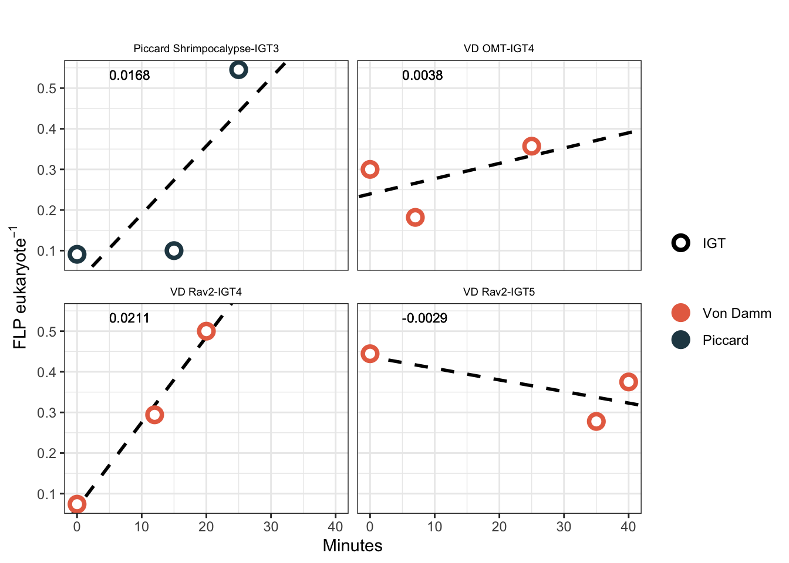
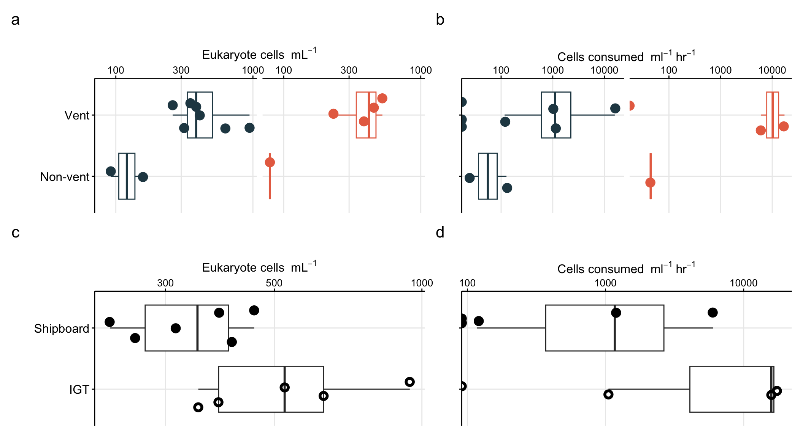
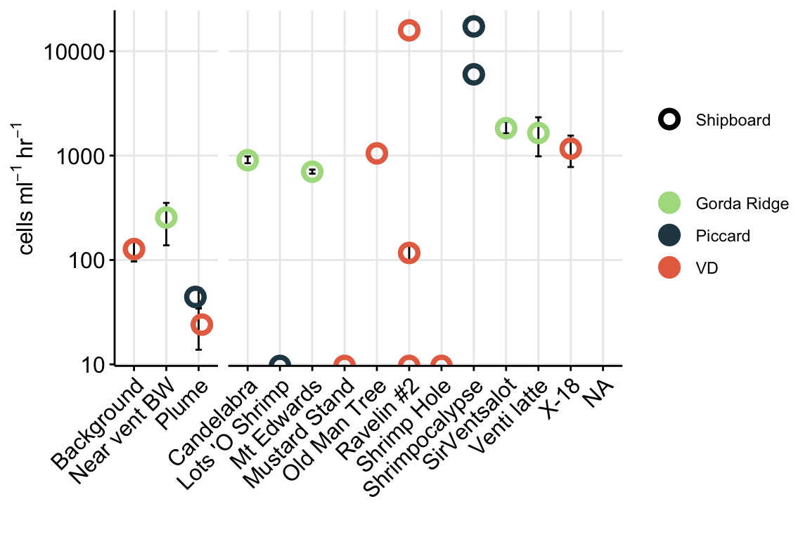
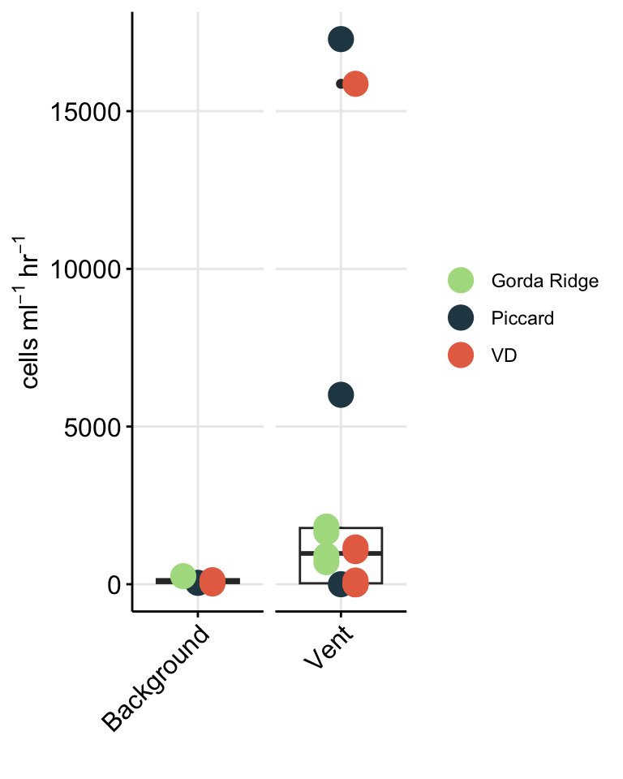

Code
library(tidyverse); library(cowplot); library(broom)
library(patchwork)Code below details how to import cell count (FLP count) information from Mid-Cayman Rise protistan grazing incubations and estimate grazing rate and cell biomass.
library(tidyverse); library(cowplot); library(broom)
library(patchwork)Import eukaryotic cell count data from grazing experiments. In this section, we will calculate cells per ml from raw counts (Field of view, etc.) and use to estimate protist cell concentration. These will be used below in grazing experiment calculations.
counts <- read.delim("input-data/euk-counts-compiled.txt",
blank.lines.skip = FALSE,
na.strings = c("", "NA"),
stringsAsFactors = FALSE) # Import
counts[is.na(counts)] <- 0 # Change blanks to zeroesRaw data table collected during microscopy count process. Below code reviews the structure of this raw data and updates column headers to be more ‘R’ friendly.
# head(counts)
colnames(counts) <- c("DATE", "SAMPLE", "EXPID", "VOL", "MAG", "FOV", "nanoNoFLP", "microNoFLP", "nanoFLP", "microFLP", "NOTES", "DateCompiled"); colnames(counts) [1] "DATE" "SAMPLE" "EXPID" "VOL" "MAG"
[6] "FOV" "nanoNoFLP" "microNoFLP" "nanoFLP" "microFLP"
[11] "NOTES" "DateCompiled"To count occurrence and number of FLP ingested by eukaryotic cells, the number of FLPs ingested was tallied and comma separated for multiple eukaryotic cells with FLP. These values need to separated and counted as 1 eukaryotic cell each, but retain the number of FLP per cell.
Parse raw microscopy count data.
counts_occur <- counts %>%
# remove incomplete
filter(NOTES != "Not countable") %>%
# Count number of euk cells observed with FLPs (ex. if "1,2", 'occur' will = 2)
mutate(nanoFLP_occur = as.numeric(str_count(nanoFLP, "[1-9]\\d*")),
microFLP_occur = as.numeric(str_count(microFLP, "[1-9]\\d*")),
# Add number of euk cells with FLPs to those without for total number of euk cells
nanoTOTAL = as.numeric(nanoNoFLP) + nanoFLP_occur,
microTOTAL = as.numeric(microNoFLP) + microFLP_occur,
euksTOTAL = nanoTOTAL + microTOTAL) %>%
data.frameInput data are the raw microscopy counts by FOV. Code below calculations cells/ml based on these values. Additionaly, variance and standard deviation are also calculated. Eukaryotic cells were also classified by size, where micro equates to >20um and nano is <20um. All counts were done at 100x magnification, confirm this: unique(counts_occur$MAG).
Calculate cell concentration (cells/ml).
counts_cellsml_all <- counts_occur %>%
group_by(SAMPLE, EXPID, VOL) %>% #Calculate averages by sample
summarise(totalFOV = n(), # Count total FOV counted
nanoAvg = sum(nanoTOTAL)/totalFOV, #Average per FOV
nanoVar = var(nanoTOTAL), #Variance
nanoSd = (2*(sqrt(nanoVar))), #Standard deviation
microAvg = sum(microTOTAL)/totalFOV, ## Repeat for microeuks
microVar = var(microTOTAL),
microSd = (2*(sqrt(microVar))),
euksAvg = sum(euksTOTAL)/totalFOV, ## Repeat for total cell count
euksVar = var(euksTOTAL),
euksSd = (2*(sqrt(euksVar))),
.groups = 'drop_last') %>%
# Calculate cells/ml based on magnification (at x100, 0.01 is vol of grid), volume filtered (VOL), dilution factor (0.9), and area of counting grid (for Huber lab scope, it is 283.385):
mutate(nanoCONC = ((nanoAvg * 283.385)/(VOL * 0.01 * 0.9)),
microCONC = ((microAvg * 283.385)/(VOL * 0.01 * 0.9)),
eukCONC = ((euksAvg * 283.385)/(VOL * 0.01 * 0.9))
) %>%
# left_join(expmeta) %>%
separate(SAMPLE, c("Site", "Name"), sep = "-", remove = FALSE) %>%
separate(EXPID, c("TimePoint", "Replicate"), sep = "-", remove = FALSE) %>%
data.frameReplicates belong to the same experiment for either Bag or IGT incubation. Below, modify these names and label new column with bag or igt. And create an average across replicates.
Average cells/ml across replicates, pivot to long format
counts_cellsml_avg <- counts_cellsml_all %>%
select(Site, Name, TimePoint, Replicate, nanoCONC, microCONC, eukCONC) %>%
mutate(EXP_TYPE = case_when(
grepl("IGT", Replicate) ~ "IGT",
grepl("Rep", Replicate) ~ "Bag"
)) %>%
mutate(IGT_REP = case_when(
EXP_TYPE == "IGT" ~ Replicate,
EXP_TYPE == "Bag" ~ "Bag")) %>%
select(-Replicate) %>%
pivot_longer(cols = ends_with("CONC"), names_to = "VARIABLE", values_to = "CONCENTRATION") %>%
group_by(Site, Name, TimePoint, EXP_TYPE, IGT_REP, VARIABLE) %>%
# Calculate mean, variance, SD, min, and max
summarise(MEAN = mean(CONCENTRATION),
VAR = var(CONCENTRATION),
SD = sd(CONCENTRATION),
SEM =(sd(CONCENTRATION)/sqrt(length(CONCENTRATION))),
MIN = min(CONCENTRATION),
MAX = max(CONCENTRATION),
.groups = 'drop_last') %>%
data.frameNOTES on calculations:
VAR = takes the sum of the squares of each value’s deviation from the mean and divides by the number of such values minus one. This differs from the calculation of variance across an entire population in that the latter divides by the size of the dataset without subtracting one.
SD = standard deviation of all values
SEM = standard deviation of sampling distribution; standard deviation divided by the square root of the sample size.
Save output file
# save(counts_cellsml_all, counts_cellsml_avg, file = "input-data/raw-avg-eukcount.RData")Reformat to parse experiment information type
# Convert to long format and add column that reports IGT vs bag experiment
plot_euk_conc <- counts_cellsml_all %>%
select(Site, Name, TimePoint, Replicate, ends_with("CONC")) %>%
mutate(EXP_TYPE = case_when(
grepl("IGT", Replicate) ~ "IGT",
grepl("Rep", Replicate) ~ "Bag"
)) %>%
pivot_longer(cols = ends_with("CONC"), names_to = "VARIABLE", values_to = "CONCENTRATION") %>%
data.frameFactor cell count data
unique(plot_euk_conc$Name)[1] "LotsOShrimp" "Plume" "Shrimpocalypse" "BSW"
[5] "MustardStand" "OMT" "Rav2" "ShrimpHole"
[9] "X18" vent_ids <- c("BSW","Plume", "Shrimpocalypse", "LotsOShrimp", "X18", "OMT", "Rav2", "MustardStand", "ShrimpHole")
vent_fullname <- c("Background","Plume", "Shrimpocalypse", "Lots 'O Shrimp", "X-18", "Old Man Tree", "Ravelin #2", "Mustard Stand", "Shrimp Hole")
site_ids <- c("VD", "Piccard")
site_fullname <- c("Von Damm", "Piccard")
plot_euk_conc$SiteOrder <- factor(plot_euk_conc$Site, levels = site_ids, labels = site_fullname)
plot_euk_conc$NameOrder <- factor(plot_euk_conc$Name, levels = vent_ids, labels = vent_fullname)Figure 1 reports all eukaryote cells per ml counts from all grazing assay counts..
conc_boxplot <- ggplot(plot_euk_conc, aes(x = NameOrder,
y = CONCENTRATION,
group = NameOrder,
fill = VARIABLE,
shape = EXP_TYPE)) +
geom_boxplot() +
# Do not color by time point
geom_jitter(color = "black", size = 2, aes(fill = VARIABLE,
shape = EXP_TYPE)) +
scale_shape_manual(values = c(21,24)) +
scale_fill_manual(values = c("#e7298a", "#fcbba1", "#c6dbef")) +
coord_flip() +
scale_y_log10() +
# scale_y_log10(limits = c(10,1000), expand = c(0, 0)) +
facet_grid(SiteOrder ~ EXP_TYPE, space = "free", scale = "free") +
theme_bw() +
theme(axis.text.x = element_text(angle = 0, h = 1, vjust = 1),
strip.background = element_blank(),
legend.position = "right",
legend.title = element_blank()) +
labs(x = "", y = bquote("Eukaryote cells "~mL^-1),
title = "Distribution of all eukaryotic cell counts")
conc_boxplotWarning: Transformation introduced infinite values in continuous y-axis
Transformation introduced infinite values in continuous y-axisWarning: Removed 39 rows containing non-finite values (stat_boxplot).Warning: Removed 39 rows containing missing values (geom_point).
Eukaryote cell concentration (cells/ml) are lower in the background and plume samples compared to vent sites. ~300 cells/ml in background and plume compared to ~1000 cells per ml at the vent sites. These values are also consistent between each vent site (Von Damm and Piccard) and between Bag and IGT samples.
Boxplot represents the median (line in box) and the 1st and 3rd quartiles in the lower and upper hinges, respectively (25th and 75th percentiles). Black data points are outliers from the boxplot. Upper and lower whiskers represent the 1.5 * interquartile ranges. Pink data points are the values contributing to the boxplot (individial counts across replicates and time points.)
eukCONC is the sum of micro and nano. Because there was a discrepency between the micro and nano cell counts, we plan to combine for most of the analysis. Here we show that the cell concentration across replicate samples was similar throughout experiments. And that the bag versus IGT experiment results were within range of one another.
Plot eukaryote cell concentration over time.
vent_ids <- c("BSW","Plume", "Shrimpocalypse", "LotsOShrimp", "X18", "OMT", "Rav2", "MustardStand", "ShrimpHole")
vent_fullname <- c("Background","Plume", "Shrimpocalypse", "Lots 'O Shrimp", "X-18", "Old Man Tree", "Ravelin #2", "Mustard Stand", "Shrimp Hole")
site_ids <- c("VD", "Piccard")
site_fullname <- c("Von Damm", "Piccard")
counts_cellsml_avg$SiteOrder <- factor(counts_cellsml_avg$Site, levels = site_ids, labels = site_fullname)
counts_cellsml_avg$NameOrder <- factor(counts_cellsml_avg$Name, levels = vent_ids, labels = vent_fullname)
# Plot trend line of euk cell count for all experiments
counts_cellsml_avg %>%
filter(VARIABLE == "eukCONC") %>%
unite("Experiment", NameOrder, IGT_REP, sep = "-", remove = FALSE) %>%
ggplot(aes(x = TimePoint, y = MEAN, shape = EXP_TYPE, fill = NameOrder)) +
geom_path(aes(group = Experiment)) +
# geom_errorbar(aes(ymax = (MEAN + SD), ymin = (MEAN - SD)), width = 0.2) +
geom_errorbar(aes(ymax = (MEAN + SEM), ymin = (MEAN - SEM)), width = 0.2) +
geom_point(stat = "identity", size = 2, aes(shape = EXP_TYPE)) +
scale_shape_manual(values = c(21, 24)) +
scale_fill_brewer(palette = "Paired") +
scale_y_log10() +
facet_wrap(SiteOrder ~ EXP_TYPE, scales = "free") +
theme_classic() + theme(strip.background = element_blank(),
legend.title = element_blank(),
title = element_text(size = 7, face = "bold"),
axis.title = element_text(size = 9)) +
labs(title = "Total euk cell counts for each experiment", y = bquote("Average eukaryote cells "~mL^-1), x = "Time point") +
guides(fill=guide_legend(override.aes=list(shape=21)))
note there is an overall drop in euk cells/ml in the final time point. Especially with the IGT samples. Take this into consideration
vent_ids <- c("BSW","Plume", "Shrimpocalypse", "LotsOShrimp", "X18", "OMT", "Rav2", "MustardStand", "ShrimpHole")
vent_fullname <- c("Background","Plume", "Shrimpocalypse", "Lots 'O Shrimp", "X-18", "Old Man Tree", "Ravelin #2", "Mustard Stand", "Shrimp Hole")
plot_euk_format <- plot_euk_conc %>%
filter(TimePoint == "T0" & (VARIABLE == "eukCONC")) %>%
group_by(SiteOrder, NameOrder, TimePoint, EXP_TYPE, VARIABLE) %>%
summarise(avg_conc = mean(CONCENTRATION),
SEM_conc = (sd(CONCENTRATION)/sqrt(length(CONCENTRATION))),
.groups = "rowwise") %>%
unite(EXPERIMENT, SiteOrder, NameOrder, EXP_TYPE, remove = FALSE) %>%
data.frame
# Factor
plot_euk_format$Site_Order <- factor(plot_euk_format$SiteOrder, levels = site_fullname, labels = site_fullname)
# View(plot_euk_format)
euk_plot <- ggplot(plot_euk_format, aes(x = NameOrder, y = avg_conc, fill = Site_Order)) +
geom_errorbar(aes(ymax = (avg_conc + SEM_conc), ymin = (avg_conc - SEM_conc)), width = 0.2) +
geom_point(aes(fill = Site_Order), color = "black", stat = "identity", size = 3, shape = 23) +
facet_grid(.~ Site_Order, space = "free", scales = "free") +
scale_fill_manual(values = c("#1c9099", "#de2d26")) +
theme_minimal() +
theme(panel.grid.major = element_line(), panel.grid.minor = element_blank(),
panel.background = element_blank(),
axis.line = element_line(colour = "black"),
axis.text.x = element_text(color="black", size = 12,
angle = 45, hjust = 1, vjust = 1),
axis.text.y = element_text(color="black", size = 12),
axis.title =element_text(color="black", size = 12),
axis.ticks = element_line(),
strip.text =element_blank(), legend.title = element_blank()) +
labs(x = "", y = bquote("Eukaryote cells "~mL^-1),
title = "")
euk_plot
Print table of eukaryote cell count information.
plot_euk_format %>%
type.convert(as.is = TRUE) %>%
filter(VARIABLE == "eukCONC") %>%
mutate(SAMPLE_TYPE = case_when(
NameOrder == "Background" ~ "Background",
NameOrder == "Plume" ~ "Plume",
TRUE ~ SiteOrder
)) %>%
group_by(SAMPLE_TYPE) %>%
summarise(MEAN_cellml = format(mean(avg_conc), scientific = T),
min_cellml = format(min(avg_conc), scientific = T),
max_cellml = format(max(avg_conc), scientific = T),
num = n())# A tibble: 4 × 5
SAMPLE_TYPE MEAN_cellml min_cellml max_cellml num
<chr> <chr> <chr> <chr> <int>
1 Background 9.183773e+01 9.183773e+01 9.183773e+01 1
2 Piccard 3.801791e+02 2.309063e+02 4.548154e+02 3
3 Plume 1.185379e+02 7.930115e+01 1.577747e+02 2
4 Von Damm 4.105001e+02 2.597696e+02 6.20998e+02 6# save(counts_cellsml_all, counts_cellsml_avg, counts_occur, file = "output-data/MCR-cellcount-dfs")DAPI slide counts from prokaryotes from same sites. Import and compare.
prok <- read.delim("input-data/prokINSITU-counts-compiled.txt")
insitu_proks <- prok %>%
filter(CELLML != "not countable") %>%
separate(SAMPLE, c("Site", "Name"), sep = "-", remove = FALSE) %>%
group_by(SAMPLE, Site, Name) %>%
summarise(MEAN = mean(as.numeric(CELLML)),
SD = sd(CELLML),
SEM = (sd(CELLML)/sqrt(length(CELLML))),
.groups = "rowwise") %>%
data.frameVisualize counts
Factor site names, etc.
insitu_proks$Name_order <- factor(insitu_proks$Name, levels = c("BSW", "Plume", "Quakeplume", "Shrimpocalypse", "LotsOShrimp", "X18", "OMT", "Rav2", "MustardStand", "ShrimpHole", "HotChimlet1", "ShrimpGulley", "SouthofHotChimlet", "SouthofLungSnack", "ArrowLoop", "Bartizan", "Rav1"), labels = c("Background","Plume", "Quakeplume", "Shrimpocalypse", "Lots 'O Shrimp", "X-18", "Old Man Tree", "Ravelin #2", "Mustard Stand", "Shrimp Hole", "Hot Chimlet #1", "Shrimp Gulley", "South of Hot Chimlet", "South of LungSnack", "Arrow Loop", "Bartizan", "Ravelin #1"))
site_ids <- c("VD", "Piccard")
site_fullname <- c("Von Damm", "Piccard")
insitu_proks$Site_order <- factor(insitu_proks$Site, levels = site_ids, labels = site_fullname)prok_plot <- ggplot(insitu_proks, aes(x = Name_order, y = MEAN)) +
geom_errorbar(aes(ymax = (MEAN + SEM), ymin = (MEAN - SEM)), width = 0.2) +
geom_point(stat = "identity", shape = 23, aes(fill = Site), size = 3) +
facet_grid(.~ Site_order, space = "free", scales = "free") +
scale_fill_manual(values = c("#de2d26", "#1c9099")) +
labs(y = bquote("Prokaryote cells "~mL^-1), x = "", title = "") +
scale_y_log10() +
theme_minimal() +
theme(panel.grid.major = element_line(), panel.grid.minor = element_blank(),
panel.background = element_blank(),
axis.line = element_line(colour = "black"),
axis.text.x = element_text(color="black", size = 12,
angle = 45, hjust = 1, vjust = 1),
axis.text.y = element_text(color="black", size = 12),
axis.title =element_text(color="black", size = 12),
axis.ticks = element_line(),
strip.text =element_blank(), legend.title = element_blank())
prok_plot
Combined eukaryote and prokaryote cell counts
euk_plot + prok_plot + patchwork::plot_layout(ncol = 1) + patchwork::plot_annotation(tag_levels = "a")
Compare in situ prokaryote cell counts from 2020 to previous years
prok_prev <- read.csv("input-data/cellcount_previousyr.csv")
prok_prev_formatted <- prok_prev %>%
mutate(VENTSITE = case_when(
grepl("Piccard", Site) ~ "Piccard",
grepl("Von Damm", Site) ~ "VD"
)) %>%
filter(!is.na(YEAR)) %>% #QC of
# filter(cells_ml != "NC") %>%
# filter(cells_ml != "") %>%
# filter(cells_ml != "no data") %>%
type.convert(as.is = TRUE, numerals = "no.loss") %>%
select(YEAR, VENTSITE, NAME = Name, REP=Replicate, CELLML = cells_ml, ORIGSAMPLE = Orig_vent_site_ID, ID_number, Origin)Re-import 2020 data to compare.
# Re-import 2020
prok <- read.delim("input-data/prokINSITU-counts-compiled.txt")
# View(prok)
proks_allyrs <- prok %>%
separate(SAMPLE, c("VENTSITE", "NAME"), sep = "-", remove = FALSE) %>%
mutate(YEAR = 2020) %>%
select(YEAR, VENTSITE, NAME, REP, CELLML, ORIGSAMPLE = BAC) %>%
bind_rows(prok_prev_formatted %>% select(-ID_number, -Origin)) %>%
type.convert(as.is = TRUE) %>%
# Remove not countable or not data samples:
filter(CELLML != "NC") %>%
filter(CELLML != "") %>%
filter(CELLML != "no data") %>%
filter(CELLML != "not countable") %>%
data.frame
# View(proks_allyrs)
# View(as.data.frame(unique(proks_allyrs$NAME)))
vent_order <- c("BSW","Plume","Quakeplume","NearsummitBeebee","MainOrifice","NearMainOrifice","Rav1","HotChimlet1","HotChimlet","SouthofHotChimlet","NearHotChimlet","HotCracks1","HotCracks2","ShrimpHole","ShrimpHole(X18)","X18","X19","SouthofLungSnack","TwinPeaks","OMT","WhiteCastle","GingerCastle","ArrowLoop","Bartizan","LotsOShrimp","MustardStand","ShrimpButtery","ShrimpCanyon","ShrimpGulley","Shrimpocalypse","ShrimpVegas")
vent_names <- c("Background","Plume","Quakeplume","Near summit Beebee Vents Mound","Main Orifice","Near Main Orifice","Ravelin #1","Hot Chimlet #1","Hot Chimlet","South of Hot Chimlet","Near Hot Chimlet","Hot Cracks #1","Hot Cracks #2","Shrimp Hole","Shrimp Hole (X-18)","X-18","X-19","South of Lung Snack","Twin Peaks","Old Man Tree","White Castle","Ginger Castle","Arrow Loop","Bartizan","Lots O Shrimp","Mustard Stand","Shrimp Buttery","Shrimp Canyon","Shrimp Gulley","Shrimpocalypse","Shrimp Vegas")
proks_allyrs$NAME_ORDER <- factor(proks_allyrs$NAME, levels = vent_order, labels = vent_names)
proks_allyrs$VENTSITE_ORDER <- factor(proks_allyrs$VENTSITE, levels = c("Piccard", "VD"), labels = c("Piccard", "Von Damm"))Plot by year.
# pdf("compare-across-yr-cellcount-04052021.pdf", h = 8, w = 7)
ggplot(proks_allyrs, aes(x = NAME_ORDER, y = as.numeric(CELLML), fill = factor(YEAR), shape = VENTSITE_ORDER)) +
geom_point(stat = "identity", aes(fill = factor(YEAR)), size = 3) +
scale_shape_manual(values = c(21,23)) +
coord_flip() +
facet_grid(VENTSITE_ORDER ~ ., space = "free", scales = "free") +
scale_y_log10() +
scale_fill_manual(values = c("#1c9099", "#ffeda0", "#fc4e2a")) +
theme_linedraw() +
theme(axis.text = element_text(color = "black", size = 10),
strip.background = element_blank(),
strip.text.y = element_text(color = "black", size = 11, hjust = 0, vjust = 1),
legend.title = element_blank(),
legend.position = "bottom",
panel.grid.minor = element_blank(),
panel.grid.major = element_line(color = "grey")) +
labs(y = bquote("Cells "~mL^-1), x = "") +
guides(fill=guide_legend(override.aes=list(shape=22)))
# dev.off()Calculate FLP per eukaryotic cell over time. Goal is to make these calculations and then determine best fit line. Slope of best fit line is the grazing rate. Need to take into account euk cells with FLPs and then the euk cells withOUT FLPs, these will be zeroes to take into account for FLPs/euk averages.
load("output-data/MCR-cellcount-dfs", verbose = TRUE)Loading objects:
counts_cellsml_all
counts_cellsml_avg
counts_occurIsolate euk cell counts with FLPs (comma separated for counts). These need to be separated into rows, use counts_occur data frame from above.
# Select nano and micro counts with FLPs
counts_sepflp <- counts_occur %>%
filter(!NOTES == "Discard") %>%
filter(!(NOTES == "DTAF stain prevented counts of FLP, Euks only")) %>%
select(DATE, SAMPLE, EXPID, VOL, MAG, FOV, nanoFLP, microFLP) %>%
# Inputs that are comma separated will be split into a new row
separate_rows(microFLP, sep = ",", convert = TRUE) %>%
separate_rows(nanoFLP, sep = ",", convert = TRUE) %>%
# Replace NAs with zeroes
replace_na(list(microFLP = 0, nanoFLP = 0)) %>%
data.frameoptional gut check of data table modification
## Check, see FOV 23, separated into rows.
# View(counts_sepflp %>%
# filter(SAMPLE == "VD-Rav2" & EXPID == "T10-Rep1"))
# View(counts_occur %>%
# filter(SAMPLE == "VD-Rav2" & EXPID == "T10-Rep1"))Isolate counts that are >0, so only eukaryote cells that were observed to have FLPs are included. Then calculate FLP per euk cell by dividing by 1 (each row is a euk cell, based on data transformation above).
counts_flp <- counts_sepflp %>%
select(SAMPLE, EXPID, nano_size = nanoFLP, micro_size = microFLP) %>%
pivot_longer(cols = ends_with("_size"), names_to = "SizeFrac", values_to = "num_of_FLP") %>%
filter(num_of_FLP > 0) %>%
separate(SAMPLE, c("Site", "Name"), sep = "-", remove = FALSE) %>%
separate(EXPID, c("TimePoint", "Replicate"), sep = "-", remove = FALSE) %>%
mutate(EXP_TYPE = case_when(
grepl("IGT", Replicate) ~ "IGT",
grepl("Rep", Replicate) ~ "Bag"
)) %>%
mutate(IGT_REP = case_when(
EXP_TYPE == "IGT" ~ Replicate,
EXP_TYPE == "Bag" ~ "Bag")) %>%
group_by(SAMPLE, EXPID, EXP_TYPE, IGT_REP, SizeFrac) %>%
summarise(total_FLP = sum(num_of_FLP),
total_euks_wflp = n(),
.groups = "rowwise") %>%
data.frameOUTPUT COLUMNS: (1) total_FLP = sum of FLPs found inside a euk cell (2) total_euks_wflp = number of euks counted with ingested FLP
Repeat above operation for euk cells without any FLP. Here, subset total number of observations where there was a euk cell without FLP. These need to be counted as euk cell without an FLP.
Below code repeats process and compiles with other FLP/euk cell data.
Repeat above process for euk cells without FLPs (0 FLP per euk cell needs to be included in overall average).
counts_flp_compiled <- counts_occur %>%
filter(!(NOTES == "Discard")) %>% #Discard bad counts
filter(!(NOTES == "DTAF stain prevented counts of FLP, Euks only")) %>%
type.convert(as.is = TRUE) %>% #modify str() for columns
select(SAMPLE, EXPID, nano_size = nanoNoFLP, micro_size = microNoFLP) %>% #select non flp
pivot_longer(cols = ends_with("_size"), names_to = "SizeFrac", values_to = "num_of_euks") %>%
separate(SAMPLE, c("Site", "Name"), sep = "-", remove = FALSE) %>%
separate(EXPID, c("TimePoint", "Replicate"), sep = "-", remove = FALSE) %>%
mutate(EXP_TYPE = case_when(
grepl("IGT", Replicate) ~ "IGT",
grepl("Rep", Replicate) ~ "Bag"
)) %>%
mutate(IGT_REP = case_when(
EXP_TYPE == "IGT" ~ Replicate,
EXP_TYPE == "Bag" ~ "Bag")) %>%
# filter(num_of_euks > 0) %>% # Remove observed zero counts
group_by(SAMPLE, EXPID, EXP_TYPE, IGT_REP, SizeFrac) %>%
summarise(total_euks_noFLP = sum(num_of_euks),
.groups = "rowwise") %>%
# Join with FLP count information
## SAMPLE, EXPID, EXPTYPE, IGTREP, and SizeFrac variables should match
left_join(counts_flp) %>% # Join with the counts of FLP per euk cell
replace_na(list(total_FLP = 0, total_euks_wflp = 0)) %>% #Replace NAs with zero
data.frameJoining, by = c("SAMPLE", "EXPID", "EXP_TYPE", "IGT_REP", "SizeFrac")Extract total eukaryote cell value by adding across nano and micro. Then combine the nano and micro cell counts.
counts_flp_compiled_all <- counts_flp_compiled %>%
# Exclude size fraction:
group_by(SAMPLE, EXPID, EXP_TYPE, IGT_REP) %>%
summarise(total_euks_noFLP = sum(total_euks_noFLP),
total_FLP = sum(total_FLP),
total_euks_wflp = sum(total_euks_wflp),
.groups = "rowwise") %>%
add_column(SizeFrac = "total_euks") %>% #Add SizeFrac column
bind_rows(counts_flp_compiled) %>% # Combine back with flp compiled list
data.frameFirst need to import and compile with metadata to get exact timing of experiments.
metadata <- read.delim("input-data/flp-exp-metadata-compiled.txt")
exp_metadata <- read.csv("input-data/flp_exp_metadata.csv")Add metadata
counts_flp_calcs_all <- counts_flp_compiled_all %>%
# Add in metadata
# IGTXb are replicate counts, include them as replicates!
separate(EXPID, c("TimePoint", "REP"), sep = "-", remove = FALSE) %>% mutate(
REP = ifelse(grepl("IGT5b", REP), "IGT5", REP),
REP = ifelse(grepl("IGT4b", REP), "IGT4", REP),
REP = ifelse(grepl("Bag", EXP_TYPE), "Bag", REP)) %>%
left_join(metadata, by = c("SAMPLE" = "SAMPLE", "TimePoint" = "TimePoint", "REP" = "REP")) %>%
left_join(exp_metadata, by = c("SAMPLE" = "SAMPLE", "REP" = "REP")) %>%
separate(SAMPLE, c("Site", "Name"), sep = "-", remove = FALSE) %>%
separate(EXPID, c("TimePoint", "Replicate_ID"), sep = "-", remove = FALSE) %>%
## Treat repeated IGT counts completely separate
# group_by(SAMPLE, Site, Name, EXPID, TimePoint, Replicate_ID, EXP_TYPE, IGT_REP, SizeFrac) %>%
## Treat repeated IGT counts as replicates (e.g., IGT4b and IGT4 == IGT4)
group_by(SAMPLE, Site, Name, EXPID, TimePoint, Replicate_ID, EXP_TYPE, REP, SizeFrac) %>%
# FLPperEuk is the total FLP divided by the total number of euk cells counted
mutate(FLPperEuk = total_FLP/(sum(total_euks_noFLP, total_euks_wflp))) %>%
unite("Experiment", Name, REP, sep = "-", remove = FALSE) %>%
data.frameCOLS: Timepoint, Minutes = time point label, actual incubated minutes
COLS: Replicate_ID, REP, and IGT_REP = full replicate identified for IGTs and Bags, designation of biological replicates, and designation of technical replicates for IGT experiments
Use lm() function in R to calculate linear regression for each experiment. Slope equates to grazing rate. Function inputs the FLP per euk cell data, performs regression and then adds a column for slope and r-squared values.
Function to estimate slope. Uses broom and tidymodels, then extracts slope.
calculate_lm <- function(df){
regression_1 <- df %>%
type.convert(as.is = TRUE) %>%
## Keep technical replicates separate for IGTs
# group_by(SAMPLE, Site, Experiment, Name, IGT_REP, SizeFrac) %>%
# nest(-SAMPLE, -Site, -Experiment, -Name, -IGT_REP, -SizeFrac) %>%
## Combine technical replicates for IGTs
group_by(SAMPLE, Site, Experiment, Name, REP, SizeFrac) %>%
nest(-SAMPLE, -Site, -Experiment, -Name, -REP, -SizeFrac) %>%
mutate(lm_fit = map(data, ~lm(FLPperEuk ~ Minutes, data = .)),
tidied = map(lm_fit, tidy)) %>%
unnest(tidied) %>%
# select(SAMPLE, Site, Experiment, Name, IGT_REP, SizeFrac, term, estimate) %>%
select(SAMPLE, Site, Experiment, Name, REP, SizeFrac, term, estimate) %>%
pivot_wider(names_from = term, values_from = estimate) %>%
data.frame
# Reset column names
colnames(regression_1) <- c("SAMPLE", "Site",
"Experiment", "Name", "REP",
"SizeFrac", "INTERCEPT", "SLOPE")
# Repeat broom model to get R2
out_regression <- df %>%
group_by(SAMPLE, Site, Experiment, Name, REP, SizeFrac) %>%
nest(-SAMPLE, -Site, -Experiment, -Name, -REP, -SizeFrac) %>%
mutate(lm_fit = map(data, ~lm(FLPperEuk ~ Minutes, data = .)),
glanced = map(lm_fit, glance)) %>%
unnest(glanced) %>%
select(SAMPLE, Site, Experiment, Name, REP, SizeFrac, r.squared) %>%
right_join(regression_1) %>%
right_join(df) %>%
data.frame
out_regression$SITE <- factor(out_regression$Site, levels = c("VD", "Piccard"))
out_regression$TYPE <- factor(out_regression$EXP_TYPE, levels = c("Bag", "IGT"))
return(out_regression)
}Note that an error may occur when running the below function. This is due to the fact that some experiments did not have replicates.
Apply to all data to obtain slope.
calcs_wslope_regression <- calculate_lm(counts_flp_calcs_all)Warning: All elements of `...` must be named.
Did you want `data = c(-SAMPLE, -Site, -Experiment, -Name, -REP, -SizeFrac)`?Warning in summary.lm(x): essentially perfect fit: summary may be unreliableWarning: All elements of `...` must be named.
Did you want `data = c(-SAMPLE, -Site, -Experiment, -Name, -REP, -SizeFrac)`?Warning in summary.lm(x): essentially perfect fit: summary may be unreliable
Warning in summary.lm(x): essentially perfect fit: summary may be unreliableJoining, by = c("SAMPLE", "Site", "Experiment", "Name", "REP", "SizeFrac")
Joining, by = c("SAMPLE", "Site", "Experiment", "Name", "REP", "SizeFrac")gut check linear regression work. Use below commands out to recalculate one linear regression. Above function uses the nest() capability of tidyverse. Below, one experiment is subset to check the value.
# Extract only plume-bag experiment from VD
# tmp_plume <- filter(counts_flp_calcs_all, Experiment == "Plume-Bag") %>% filter(Site == "VD") %>% filter(SizeFrac == "total_euks")
# tmp_plume # View
# Perform linear regression
# lm_out <- lm(FLPperEuk ~ Minutes, data = tmp_plume)
# # Check output
# summary(lm_out)
# lm_out$coefficients #Intercept=intercept #Minutes = SLOPE
# # Compare with nested function output
# filter(calcs_wslope_regression, Experiment == "Plume-Bag") %>% filter(Site == "VD") %>% filter(SizeFrac == "total_euks") %>% headPlot all bag experiments with estimated slope.
# | fig-width: 7
# | fig-height: 8
calcs_wslope_regression %>%
filter(SizeFrac == "total_euks") %>%
# Filter out IGT samples for now
# filter(TYPE != "IGT") %>%
unite(EXPERIMENT, SITE, Experiment, sep = " ", remove = FALSE) %>%
ggplot(aes(x = Minutes, y = FLPperEuk, fill = Site, shape = TYPE, group = Experiment)) +
geom_abline(aes(slope = SLOPE, intercept = INTERCEPT), color = "black", linetype = "dashed", size = 1) +
geom_point(stat = "identity", color = "black",
size = 2, aes(shape = TYPE, fill = Site)) +
scale_shape_manual(values = c(21, 24)) +
scale_fill_manual(values = c("#de2d26", "#1c9099")) +
labs(x = "Minutes", y = bquote("FLP"~eukaryote^-1), title = "Grazing experiment regression") +
facet_wrap(. ~ EXPERIMENT) +
# Report r.squared
geom_text(aes(x = 42, y = max(FLPperEuk), label = paste(round(SLOPE, 4))),
vjust = 1, hjust = 0, size = 3) +
theme_bw() +
theme(strip.background = element_blank(),
strip.text = element_text(color = "black", size = 7),
legend.title = element_blank(),
legend.position = "right")
Data points represent the FLP per euk cells (based on total eukaryote cells counts). Y-axis represents the duration of incubation (in minutes). The dashed purple line reprents the slope and intercept of the experiment.
IGT experiment results appear to have bottle effect, especially in the final time point. Additionally, due to the lack of biological replicates in the IGT experiments, technical replicates are treated as biological replicates in the regression below.
IGT_lm_woTf <- counts_flp_calcs_all %>%
# Select only IGT experiments with total eukaryotes, remove Tf (T3)
filter(SizeFrac == "total_euks") %>%
filter(EXP_TYPE == "IGT" & !(TimePoint == "T3")) %>%
add_column(IGT_cor = "rm Tf") %>%
data.frame
# Recalculate lm(), keep replicates separate
igt_regression_noTf <- calculate_lm(IGT_lm_woTf) # RecalculateWarning: All elements of `...` must be named.
Did you want `data = c(-SAMPLE, -Site, -Experiment, -Name, -REP, -SizeFrac)`?
All elements of `...` must be named.
Did you want `data = c(-SAMPLE, -Site, -Experiment, -Name, -REP, -SizeFrac)`?Joining, by = c("SAMPLE", "Site", "Experiment", "Name", "REP", "SizeFrac")
Joining, by = c("SAMPLE", "Site", "Experiment", "Name", "REP", "SizeFrac")Plot IGT grazing experiments with newly calculated grazing effect.
igt_regression_noTf %>%
# filter(SizeFrac == "total_euks") %>%
# filter(TYPE != "IGT") %>%
unite(EXPERIMENT, SITE, Experiment, sep = " ", remove = FALSE) %>%
ggplot(aes(x = Minutes, y = FLPperEuk, fill = Site, shape = TYPE, group = Experiment)) +
geom_abline(aes(slope = SLOPE, intercept = INTERCEPT), color = "black", linetype = "dashed", size = 1) +
geom_point(stat = "identity", color = "black",
size = 2, aes(shape = TYPE, fill = Site)) +
scale_shape_manual(values = c(24)) +
scale_fill_manual(values = c("#de2d26", "#1c9099")) +
labs(x = "Minutes", y = bquote("FLP"~eukaryote^-1), title = "Grazing experiment regression") +
facet_wrap(. ~ EXPERIMENT) +
# Report r.squared
geom_text(aes(x = 5, y = max(FLPperEuk), label = paste(round(SLOPE, 4))),
vjust = 1, hjust = 0, size = 3) +
theme_bw() +
theme(strip.background = element_blank(),
strip.text = element_text(color = "black", size = 7),
legend.title = element_blank(),
legend.position = "right")
results are more consistent across experiments.
calcs_wslope_regression_update <- calcs_wslope_regression %>%
filter(TYPE != "IGT") %>%
bind_rows(igt_regression_noTf %>% select(-IGT_cor)) %>%
data.frame
# Factor
vent_ids <- c("BSW","Plume", "Shrimpocalypse", "LotsOShrimp", "X18", "OMT", "Rav2", "MustardStand", "ShrimpHole")
vent_fullname <- c("Background","Plume", "Shrimpocalypse", "Lots 'O Shrimp", "X-18", "Old Man Tree", "Ravelin #2", "Mustard Stand", "Shrimp Hole")
site_ids <- c("VD", "Piccard")
site_fullname <- c("Von Damm", "Piccard")
# Factor for shipboard
calcs_wslope_regression_update$SiteOrder <- factor(calcs_wslope_regression_update$Site, levels = site_ids, labels = site_fullname)
calcs_wslope_regression_update$NameOrder <- factor(calcs_wslope_regression_update$Name, levels = vent_ids, labels = vent_fullname)
# View(calcs_wslope_regression_update)
# write.csv(calcs_wslope_regression_update, file = "output-data/estimated-slopes-grazingexp.csv")All incubations had control experiments run alongside them. This was to ensure added FLP did not decrease or change in concentration over time.
bac_ctrl <- read.delim("input-data/bac-counts-compiled.txt")
# dim(bac_ctrl)
dtaf <- bac_ctrl %>%
separate(SampleID, c("exp", "Replicate", "TimePoint"), sep = "-", remove = FALSE) %>%
separate(Site, c("Site", "Name"), sep = "-", remove = FALSE) %>%
filter(Stain == "DTAF") %>%
data.frameWarning: Expected 2 pieces. Additional pieces discarded in 17 rows [33, 34, 35,
36, 37, 38, 39, 40, 41, 42, 43, 44, 45, 46, 47, 48, 49].# View(bac_ctrl)
# head(dtaf)
dtaf_avg <- dtaf %>%
group_by(TimePoint, Stain, Site, Name) %>%
summarise(Avg_cellsperml = mean(Cells.ml)) %>%
data.frame`summarise()` has grouped output by 'TimePoint', 'Stain', 'Site'. You can
override using the `.groups` argument.dtaf_avg %>%
filter(Site != "IGT") %>%
ggplot(aes(x = TimePoint, y = Avg_cellsperml, fill = Name, shape = Site)) +
geom_rect(data = filter(dtaf_avg, TimePoint == "T0", Site != "IGT"), aes(
ymin = (Avg_cellsperml-(0.1*Avg_cellsperml)),
ymax = (Avg_cellsperml+(0.1*Avg_cellsperml))), color = NA, alpha = 0.4, xmin = 0, xmax = 6, fill = "black") +
geom_line(aes(group = Name)) +
geom_point(stat = "identity", aes(shape = Site, fill = Name), size = 2) +
# scale_fill_manual(values = c("black","#9970ab", "#5aae61")) +
facet_wrap(Name ~ Site) +
scale_y_log10() +
theme_bw() + theme(strip.background = element_blank(),
legend.title = element_blank(),
axis.text = element_text(size = 10, color = "black"),
title = element_text(size = 10, face = "bold"),
axis.title = element_text(size = 9)) +
labs(title = "FLP counts for controls", y = bquote("Log FLP "~mL^-1), x = "Time point")
Repeat for IGT experiments.
dtaf_avg %>%
filter(Site == "IGT") %>%
ggplot(aes(x = TimePoint, y = Avg_cellsperml, fill = Name, shape = Site)) +
geom_rect(data = filter(dtaf_avg, TimePoint == "T0", Site == "IGT"), aes(
ymin = (Avg_cellsperml-(0.1*Avg_cellsperml)),
ymax = (Avg_cellsperml+(0.1*Avg_cellsperml))), color = NA, alpha = 0.4, xmin = 0, xmax = 6, fill = "black") +
geom_line(aes(group = Name)) +
geom_point(stat = "identity", aes(shape = Site, fill = Name), size = 2) +
# scale_fill_manual(values = c("black","#9970ab", "#5aae61")) +
facet_wrap(Name ~ Site) +
scale_y_log10() +
theme_bw() + theme(strip.background = element_blank(),
legend.title = element_blank(),
axis.text = element_text(size = 10, color = "black"),
title = element_text(size = 10, face = "bold"),
axis.title = element_text(size = 9)) +
labs(title = "FLP counts for controls", y = bquote("Log FLP "~mL^-1), x = "Time point")
# head(calcs_wslope_regression_update)
# View(calcs_wslope_regression_update)
# Generate final table
bsw <- c("Plume", "Background")
table_grazerate <- calcs_wslope_regression_update %>%
filter(SizeFrac == "total_euks") %>%
select(SAMPLE, FLUID_ORIGIN, CRUISE_SAMPLE, SiteOrder, NameOrder, SLOPE, EXP_TYPE, EXP_REPS, EXP_VOL, CTRL_REPS, CTRL_VOL, Site=SiteOrder, Name=NameOrder, RATE = SLOPE, Minutes) %>%
distinct() %>%
group_by(SAMPLE, FLUID_ORIGIN, CRUISE_SAMPLE, EXP_TYPE, EXP_REPS, EXP_VOL, CTRL_REPS, CTRL_VOL, Site, Name, RATE) %>%
summarise(TimePoints = str_c(Minutes, collapse = ", ")) %>%
ungroup() %>%
mutate(GRAZE_RATE = case_when(
RATE < 0 ~ 0,
TRUE ~ RATE
),
type = case_when(
Name == "Plume" ~ "Plume",
Name == "Background" ~ "Background",
EXP_TYPE == "IGT" ~ "Vent-IGT",
EXP_TYPE == "Bag" ~ "Vent-Bag"
)) %>%
data.frame`summarise()` has grouped output by 'SAMPLE', 'FLUID_ORIGIN', 'CRUISE_SAMPLE',
'EXP_TYPE', 'EXP_REPS', 'EXP_VOL', 'CTRL_REPS', 'CTRL_VOL', 'Site', 'Name'. You
can override using the `.groups` argument.Amend table with estimated FLP concentration
# head(table_grazerate)
dtaf_igt <- 5352.8278 # Manually insert FLP concentration for IGT experiments; this value is estimated from how IGT FLP spike-ins were calculated
#
table_grazerate_wflp <- bac_ctrl %>%
filter(FLP_t0 == "use") %>%
add_column(EXP_TYPE = "Bag") %>%
group_by(Site, EXP_TYPE) %>%
summarise(FLP_conc = mean(Cells.ml)) %>%
right_join(table_grazerate, by = c("Site" = "SAMPLE", "EXP_TYPE" = "EXP_TYPE")) %>%
mutate(FLP_conc = ifelse(EXP_TYPE == "IGT", dtaf_igt, FLP_conc)) %>%
select(everything(), FIELD = `Site.y`) %>%
data.frame`summarise()` has grouped output by 'Site'. You can override using the
`.groups` argument.Introduce factors in table for visualizations
type_order <- c("Vent-Bag", "Vent-IGT", "Plume", "Background")
table_grazerate_wflp$TYPE <- factor(table_grazerate_wflp$type, levels = type_order)
vent_ids <- c("BSW","Plume", "Shrimpocalypse", "LotsOShrimp", "X18", "OMT", "Rav2", "MustardStand", "ShrimpHole")
vent_fullname <- c("Background","Plume", "Shrimpocalypse", "Lots 'O Shrimp", "X-18", "Old Man Tree", "Ravelin #2", "Mustard Stand", "Shrimp Hole")
site_ids <- c("VD", "Piccard")
site_fullname <- c("Von Damm", "Piccard")
vent_colors <- c("#0868ac", "#41ab5d", "#e7298a", "#c994c7", "#fc4e2a", "#fed976", "#6a51a3", "#ffeda0", "#a1d99b")
names(vent_colors) <- vent_fullname
table_grazerate_wflp$NAME <- factor(table_grazerate_wflp$Name, levels = vent_fullname)# svg("", h =, w = )
grazing_min_plot <- table_grazerate_wflp %>%
ggplot(aes(y = GRAZE_RATE, x = NAME, shape = EXP_TYPE, fill = FIELD)) +
geom_jitter(stat = "identity", aes(shape = EXP_TYPE, fill = FIELD),
color = "black", size = 3, width = 0.3) +
scale_shape_manual(values = c(21, 24)) +
scale_fill_manual(values = c("#de2d26", "#1c9099")) +
facet_grid(.~Site, space = "free", scales = "free") +
# coord_flip() +
theme_minimal() +
theme(panel.grid.major = element_line(), panel.grid.minor = element_blank(),
panel.background = element_blank(),
axis.line = element_line(colour = "black"),
axis.text.x = element_text(color="black", size = 12,
angle = 45, hjust = 1, vjust = 1),
axis.text.y = element_text(color="black", size = 12),
axis.title =element_text(color="black", size = 12),
axis.ticks = element_line(),
strip.text =element_blank(), legend.title = element_blank())+
guides(fill = guide_legend(override.aes = list(shape = c(21))),
shape = guide_legend(override.aes = list(fill = "black"))) +
labs(x = "", y = bquote("FLP " ~grazer^-1 ~min^-1))
# dev.off()
grazing_min_plot
Amend table with eukaryote and prokaryote estimated biomass.
# Subset the average in situ prok cells/ml for non-background samples
tmp <- filter(insitu_proks, Name != "BSW", Name != "Plume") %>% select(MEAN)
avg_insitu <- mean(tmp$MEAN)
# head(insitu_proks)
# Add to master table with data
table_grazerate_wflp_wprok <- insitu_proks %>%
select(Site = SAMPLE, Prok_conc = MEAN, Prok_sem = SEM) %>%
right_join(table_grazerate_wflp) %>%
mutate(Prok_conc = ifelse(is.na(Prok_conc), avg_insitu, Prok_conc)) %>%
data.frameJoining, by = "Site"table_grazerate_wflp_wprok_weuk <- plot_euk_format %>%
select(Name = NameOrder, FIELD = SiteOrder, euk_conc = avg_conc, EXP_TYPE, euk_conc_sem = SEM_conc) %>%
right_join(table_grazerate_wflp_wprok) %>%
select(FIELD, NAME = Name, EXP = EXP_TYPE, SAMPLE = Site, RATE_min = GRAZE_RATE, FLP_ml = FLP_conc, PROK_ml = Prok_conc, PROK_sem = Prok_sem, EUK_ml = euk_conc, EUK_sem = euk_conc_sem, TimePoints, EXP_REPS, EXP_VOL, CTRL_REPS, CTRL_VOL) %>%
data.frameJoining, by = c("Name", "FIELD", "EXP_TYPE")Description of variables above:
Based on Unrein et al. 2007, we use the estimated grazing rate, in situ prok abundance, in situ euk abundance, and the concentration of FLP to make additional estimates.
head(table_grazerate_wflp_wprok_weuk) FIELD NAME EXP SAMPLE RATE_min FLP_ml PROK_ml PROK_sem
1 Von Damm Background Bag VD-BSW 0.002958889 4861.824 37889.62 8608.427
2 Von Damm Plume Bag VD-Plume 0.005274231 34242.354 16478.31 2623.935
3 Von Damm X-18 Bag VD-X18 0.001744429 3148.722 111429.78 2973.793
4 Von Damm Old Man Tree IGT VD-OMT 0.014510943 5352.828 71147.40 NA
5 Von Damm Ravelin #2 Bag VD-Rav2 0.003470217 51890.942 71147.40 NA
6 Von Damm Ravelin #2 IGT VD-Rav2 0.015395240 5352.828 71147.40 NA
EUK_ml EUK_sem TimePoints EXP_REPS EXP_VOL CTRL_REPS CTRL_VOL
1 91.83773 21.86613 0, 10, 15, 20, 40 3 2.00 2 0.5
2 157.77468 67.09859 0, 10, 15, 25, 57 3 2.00 2 1.0
3 314.87222 104.95741 0, 15, 20, 40 2 1.50 2 0.5
4 472.30833 122.45031 0, 7, 25 1 0.15 NA NA
5 409.33389 73.47019 0, 10, 15, 21, 40 3 1.50 2 0.5
6 620.99799 123.17702 0, 12, 20 1 0.15 NA NAtable_wcalcs <- table_grazerate_wflp_wprok_weuk %>%
# Ingestion rate per hour
mutate(RATE_hr = (RATE_min * 60),
RATE_day = (RATE_hr * 24), #Compare to GR?
# FLP concentration per L
FLP_L = (FLP_ml * 1000),
# mL per grazer per hr
CLEARANCE_RATE_ml = (RATE_hr/FLP_ml),
# nL per grazer per hour
CLEARANCE_RATE_nL = ((RATE_hr/FLP_ml)/1.00E+6),
# proks per grazer per hr
SPEC_GRAZE_RATE_hr = (CLEARANCE_RATE_ml * PROK_ml),
# proks per grazer per day
GRAZE_RATE_DAY = (24 * SPEC_GRAZE_RATE_hr),
# proks per ml per hr
GRAZING_EFFECT_hr = (SPEC_GRAZE_RATE_hr * EUK_ml),
GRAZING_EFFECT_hr_min = (SPEC_GRAZE_RATE_hr * (EUK_ml - EUK_sem)),
GRAZING_EFFECT_hr_max = (SPEC_GRAZE_RATE_hr * (EUK_ml + EUK_sem)),
# cells per ml per day
GRAZING_EFFECT_day = ((SPEC_GRAZE_RATE_hr * 24) * EUK_ml),
# Percentage per day
BAC_TURNOVER_PERC = 100*(GRAZING_EFFECT_day / PROK_ml),
BAC_TURNOVER_PERC_min = 100*(GRAZING_EFFECT_day / (PROK_ml - PROK_sem)),
BAC_TURNOVER_PERC_max = 100*(GRAZING_EFFECT_day / (PROK_ml + PROK_sem))) %>%
data.frame
# View(table_wcalcs)Explanation of units for table with calculated values.
RATE_min & RATE_hr = Grazing rate as ‘FLPs per grazer per minute’ and per hour
CLEARANCE_RATE = ml or nL per grazer per hour
SPEC_GRAZE_RATE (Specific grazing rate) = Prokaryotes per grazer per hour
GRAZING EFFECT = bacteria per ml per hour
Bacterial turnover rate = % per day
colnames(table_wcalcs) [1] "FIELD" "NAME" "EXP"
[4] "SAMPLE" "RATE_min" "FLP_ml"
[7] "PROK_ml" "PROK_sem" "EUK_ml"
[10] "EUK_sem" "TimePoints" "EXP_REPS"
[13] "EXP_VOL" "CTRL_REPS" "CTRL_VOL"
[16] "RATE_hr" "RATE_day" "FLP_L"
[19] "CLEARANCE_RATE_ml" "CLEARANCE_RATE_nL" "SPEC_GRAZE_RATE_hr"
[22] "GRAZE_RATE_DAY" "GRAZING_EFFECT_hr" "GRAZING_EFFECT_hr_min"
[25] "GRAZING_EFFECT_hr_max" "GRAZING_EFFECT_day" "BAC_TURNOVER_PERC"
[28] "BAC_TURNOVER_PERC_min" "BAC_TURNOVER_PERC_max"bkgd <- c("Background", "Plume")
library(gt)
#
# table_wcalcs %>%
# mutate(loc_type = case_when(
# NAME %in% bkgd ~ "Background",
# TRUE ~ "Vent fluid"
# )) %>%
# # group_by(loc_type, SITE, EXP) %>%
# select(-SAMPLE) %>%
# gt(
# groupname_col = c("FIELD", "EXP", "loc_type"),
# rowname_col = "NAME"
# ) %>%
# cols_label(RATE_min = html("minute<sup>-1</sup>"),
# RATE_hr = html("hour<sup>-1</sup>"),
# RATE_day = html("day<sup>-1</sup>"),
# EXP_REPS = html("# of incubations"),
# FLP_ml = html("FLP ml<sup>-1</sup>"),
# PROK_ml = html("Prokaryote cells ml<sup>-1</sup>"),
# PROK_sem = html("SEM prokaryote cells ml<sup>-1</sup>"),
# EUK_ml = html("Eukaryote cells ml<sup>-1</sup>"),
# EUK_sem = html("SEM eukaryote cells ml<sup>-1</sup>"),
# FLP_L = html("FLP L<sup>-1</sup>"),
# CLEARANCE_RATE_ml = html("ml grazer<sup>-1</sup> hr<sup>-1</sup>"),
# CLEARANCE_RATE_nL = html("nl grazer<sup>-1</sup> hr<sup>-1</sup>"),
# SPEC_GRAZE_RATE_hr = html("Prokaryote grazer<sup>-1</sup> hr<sup>-1</sup>"),
# GRAZE_RATE_DAY = html("Prokaryote grazer<sup>-1</sup> day<sup>-1</sup>"),
# GRAZING_EFFECT_hr = html("Prokaryote ml<sup>-1</sup> hr<sup>-1</sup>"),
# GRAZING_EFFECT_hr_min = html("MIN"),
# GRAZING_EFFECT_hr_max = html("MAX"),
# GRAZING_EFFECT_day = html("Prokaryote ml<sup>-1</sup> day<sup>-1</sup>"),
# BAC_TURNOVER_PERC = html("Bacteria turnover % day<sup>-1</sup>"),
# BAC_TURNOVER_PERC_min = html("MIN"),
# BAC_TURNOVER_PERC_max = html("MAX")) %>%
# tab_spanner(
# label = (html("Turnover")),
# columns = starts_with("BAC_TURNOVER")
# ) %>%
# tab_spanner(
# label = (html("Grazing rate: prokaryote cells consumed")),
# columns = starts_with("GRAZING_EFFECT")
# ) %>%
# tab_spanner(
# label = (html("ml grazer<sup>-1</sup> hr<sup>-1</sup>")),
# columns = c(CLEARANCE_RATE_ml, CLEARANCE_RATE_nL)
# ) %>%
# tab_spanner(
# label = html("Specific grazing rate"),
# columns = c(SPEC_GRAZE_RATE_hr, GRAZE_RATE_DAY)
# ) %>%
# tab_spanner(
# label = (html("FLPs grazer<sup>-1</sup>")),
# columns = c(RATE_hr, RATE_min, RATE_day),
# ) %>%
# tab_spanner(
# label = (html("Cell counts")),
# columns = c(PROK_ml, PROK_sem, EUK_ml, EUK_sem, FLP_L, FLP_ml),
# ) %>%
# tab_source_note(source_note = "NAs indicate values were unavailable.
# Zero values for rates indicate no grazing pressure detected.") %>%
# fmt_scientific(columns = everything()) %>%
# tab_options(
# table.font.size = 12,
# table.border.top.color = "black",
# column_labels.border.bottom.color = "black",
# column_labels.border.bottom.width= px(3),
# table.width = pct(100))Table S1 - grazing experiment information only
# write_delim((table_wcalcs %>%
# select(FIELD, NAME, EXP, SAMPLE, TimePoints, starts_with("EXP_"), starts_with("CTRL_"), RATE_min)), file = "output-data/tables1-grazing-exp-list.txt", delim = "\t")References for estimating biovolume Pernice, M.C., Forn, I., Gomes, A., Lara, E., Alonso-Sáez, L., Arrieta, J.M., et al. (2015) Global abundance of planktonic heterotrophic protists in the deep ocean. ISME J 9: 782–792.
# Import manual biovolume measurements
biov <- read.delim("input-data/biovol-euk-12-10-2020.txt")
head(biov) EXP VENT_BSW h d
1 IGT vent 30.077 25.764
2 IGT vent 89.582 10.000
3 Bag BSW 14.595 8.036
4 Bag BSW 12.480 8.982
5 Bag vent 9.218 3.120
6 IGT vent 17.255 9.986# Calculate volume
biov_calc <- biov %>%
mutate(SizeFrac = case_when(
h >= 20 ~ "micro",
TRUE ~ "nano")) %>%
mutate(Volume = ((pi/6) * (d^2) * d)) %>% # Calculate volume (um cubed) # Hillebrand et al. 1999
mutate(pgC_cell = (0.216 * (Volume^0.939))) %>% # Calculate Cell biomass in pg C per cell # Menden-Deuer and Lessard 2000
data.frame
# View(biov_calc)
biov_calc EXP VENT_BSW h d SizeFrac Volume pgC_cell
1 IGT vent 30.077 25.764 micro 8954.44130 1110.2426245
2 IGT vent 89.582 10.000 micro 523.59878 77.1957618
3 Bag BSW 14.595 8.036 nano 271.71800 41.6956679
4 Bag BSW 12.480 8.982 nano 379.41786 57.0486460
5 Bag vent 9.218 3.120 nano 15.90239 2.9015292
6 IGT vent 17.255 9.986 nano 521.40274 76.8917043
7 Bag vent 41.153 21.000 micro 4849.04826 624.1445904
8 IGT vent 10.282 4.136 nano 37.04591 6.4194942
9 IGT vent 29.776 25.852 micro 9046.50993 1120.9583343
10 IGT vent 10.991 4.000 nano 33.51032 5.8424695
11 Bag vent 14.333 2.000 nano 4.18879 0.8290772
12 Bag vent 36.164 3.000 micro 14.13717 2.5980292
13 Bag BSW 16.206 14.924 nano 1740.42111 238.4669404
14 Bag BSW 7.000 7.000 nano 179.59438 28.2640658
15 Bag vent 10.069 5.000 nano 65.44985 10.9544849min(biov_calc$Volume)[1] 4.18879max(biov_calc$Volume)[1] 9046.51mean((biov_calc %>% filter(SizeFrac == "nano"))$Volume)[1] 324.8651mean((biov_calc %>% filter(SizeFrac == "micro"))$Volume)[1] 4677.547mean((biov_calc %>% filter(SizeFrac == "nano"))$pgC_cell)[1] 46.93141mean((biov_calc %>% filter(SizeFrac == "micro"))$pgC_cell)[1] 587.0279Volume is reported as um^3
# Volume by experiment type
biov_calc %>%
group_by(EXP) %>% summarise(VOL = mean(Volume), C = mean(pgC_cell))# A tibble: 2 × 3
EXP VOL C
<chr> <dbl> <dbl>
1 Bag 836. 112.
2 IGT 3186. 400.# Volume by euk size
biov_calc %>%
group_by(SizeFrac) %>% summarise(VOL = mean(Volume), C = mean(pgC_cell))# A tibble: 2 × 3
SizeFrac VOL C
<chr> <dbl> <dbl>
1 micro 4678. 587.
2 nano 325. 46.9# Volume by site
biov_calc %>%
group_by(VENT_BSW) %>% summarise(VOL = mean(Volume), C = mean(pgC_cell))# A tibble: 2 × 3
VENT_BSW VOL C
<chr> <dbl> <dbl>
1 BSW 643. 91.4
2 vent 2188. 276. # head(biov_calc)
euk_vol <- mean(biov_calc$Volume);euk_vol # in um^3[1] 1775.759euk_carbon <- mean(biov_calc$pgC_cell); euk_carbon # in pg C per cell[1] 226.9636euk_carbon_min <- min(biov_calc$pgC_cell); euk_carbon_min[1] 0.8290772euk_carbon_max <- max(biov_calc$pgC_cell); euk_carbon_max[1] 1120.958# euk_carbonAvg euk biomass pg C per individual cell == {r}euk_carbon
LIKELY REMOVE ALL OF THIS - THIS IS CIRCULAR MATH!
Compare with Menden-Deuer and Lessard 2000, Table 2 - using only the heterotrophic species measured. Based on Table 2, the min volume was 4745 and the maximum was 1.2 x10^7 µm^3. Carbon content was measured at pg per cell, this was 469.48-35,339 pg per cell.
Import the heterotroph species volume and carbon content to compare to my measured values.
# Hu-measured
range(biov_calc$Volume)[1] 4.18879 9046.50993range(biov_calc$pgC_cell)[1] 0.8290772 1120.9583343c_prev <- read.delim("input-data/md-lessard-2000.txt") # Table 2, heterotrophs only
# c_prev
# combine and plot
carbon_compare <- c_prev %>%
add_column(source = "Menden-Deuer Lessard") %>%
select(source, Volume = vol, pgC_cell) %>%
rbind(biov_calc %>% add_column(source = "MCR") %>% select(source, Volume, pgC_cell)) %>%
ggplot(aes(x = Volume, y = pgC_cell, fill = source)) +
geom_point(aes(fill = source), shape = 23, color = "black", size = 3) +
scale_y_log10() + scale_x_log10() +
labs(title = "Compare literature to measured cell volume & C content",
x = bquote("Volume" ~µm^-3),
y = bquote("pg C" ~cell^-1)) +
theme_bw() + theme(legend.title = element_blank(),
axis.title = element_text(size = 14),
axis.text = element_text(size = 14),
legend.text = element_text(size = 14))
carbon_compare
euk_carbon_lit_mean <- mean(c_prev$pgC_cell)
euk_carbon_lit_min <- min(c_prev$pgC_cell)
euk_carbon_lit_max <- max(c_prev$pgC_cell)Upon comparison, the measured carbon content was much lower from the grazing experiments. This makes sense, as I am looking at preserved specimen and a smaller total number of cells. AND the deep-sea protist cell sizes may be smaller overall.
Find lowest estimates or protist carbon, benthic estimates, and others? How does it compare to my measurements?
Below adding in biomass estimates from prokaryotes and protists.
bac_carbon_ug <- (86)*(1.00E-9) # From Derived from Morono et al. 2011
# bac_carbon_ug
bac_carbon_ug_2 <- (173)*(1.00E-9) # Derived from McNichol et al. 2018; LOFERER-KRO ̈ ßBACHER, J. KLIMA & R. PSENNER 1998
# table_wcalcsAmend all to table Incorporate calculations that include biomass of population and ug C consumed. For rate measurements, only incorporate the Morono et al. 2011 biomass for prokaryotes. This way it is on the lower end and is comparable to Gorda Ridge work.
bsw <- c("Plume", "Background")
table_wcalcs_biomass <- table_wcalcs %>%
add_column(euk_C_ug_Hu = (euk_carbon / (1.00E+06))) %>% # Convert to ug from pg
add_column(euk_C_ug_lit = (euk_carbon_lit_mean / (1.00E+06))) %>% # literature
add_column(bac_C_ug = bac_carbon_ug) %>%
add_column(bac_C_ug_2 = bac_carbon_ug_2) %>%
# Grazing rate in ug C per bac per day
mutate(RATE_ugCbac_pergrazer_perday = (RATE_hr * 24 * bac_C_ug), # Grazing rate as ug C per grazer per day
# % of cell carbon per day
SPEC_INGESTION_RATE = (RATE_ugCbac_pergrazer_perday / euk_C_ug_Hu),
SPEC_INGESTION_RATE_lit = (RATE_ugCbac_pergrazer_perday / euk_C_ug_lit),
Prok_biomass = PROK_ml * bac_carbon_ug,
Euk_biomass_Hu = EUK_ml * euk_C_ug_Hu,
Euk_biomass_lit = EUK_ml * euk_C_ug_lit,
Prok_biomass_L = PROK_ml * bac_carbon_ug * 1000,
Euk_biomass_Hu_L = EUK_ml * euk_C_ug_Hu * 1000,
Euk_biomass_lit_L = EUK_ml * euk_C_ug_lit * 1000,
# Repeat with SEM values
Prok_biomass_sem = PROK_sem * bac_carbon_ug,
Euk_biomass_Hu_sem = EUK_sem * euk_C_ug_Hu,
Euk_biomass_lit_sem = EUK_sem * euk_C_ug_lit,
Prok_biomass_sem_L = PROK_sem * (bac_carbon_ug* 1000),
Euk_biomass_Hu_sem_L = EUK_sem * (euk_C_ug_Hu * 1000),
Euk_biomass_lit_sem_L = EUK_sem * (euk_C_ug_lit * 1000)) %>%
type.convert(as.is = TRUE) %>%
mutate(detected = case_when(
RATE_min < 0 ~ "Not detected",
TRUE ~ "Detected")) %>%
mutate(type = case_when(
NAME %in% bsw ~ NAME,
TRUE ~ paste("Vent", EXP, sep="-")
)) %>%
mutate(GRAZE_RATE = case_when(
RATE_min < 0 ~ 0,
TRUE ~ RATE_min
)) %>%
mutate(type_site = case_when(
NAME %in% bsw ~ NAME,
TRUE ~ "Vent"
)) %>%
data.frame
# View(table_wcalcs_biomass)Volume is reported as um^3
Also make a “bounded” table that demonstrates the ug C consumed in the context of McNichol et al.
# G = number of cells grazed during experiment duration
table_wcalcs_biomass_bounded <- table_wcalcs_biomass %>%
add_column(fgC_cell = 86) %>% # Add in Morono et al. 2011 value
mutate(
# cells_consumed_perday = (G / 1), # Rate of cells consumed * in situ prok, per day
fgC_ml_perday = (GRAZING_EFFECT_day * fgC_cell), # Convert cell amount to fg C
ugC_L_perday = (fgC_ml_perday * (1e-09) * 1000), # Convert to ug C per L
lower_mcnichol = 100*(ugC_L_perday / 17.3),
upper_mcnichol = 100*(ugC_L_perday / 321.4)
) %>%
data.frame# head(table_wcalcs_biomass_bounded)
# View(table_wcalcs_biomass_bounded)
# write_delim(table_wcalcs_biomass_bounded, file = "output-data/table-wcalc.txt", delim = "\t")From Axial Seamount cruise (July 2022) - have Anemone vent and plume euk cell counts to compare.
counts_ax <- read.csv("../../GrazingatAxial-2022/euk-cell-counts-11142022.csv",
blank.lines.skip = FALSE,
na.strings = c("", "NA"),
stringsAsFactors = FALSE) # Import
counts_ax[is.na(counts_ax)] <- 0 # Change blanks to zeroesModify grazing code to count euk cells/ml so it considers euk cell count samples only.
counts_cellsml_axial <- counts_ax %>%
select(SAMPLE, EXP = `EXP.ID`, VOL = `vol..ml.`, MAG = `Mag..x.`, nano = `X.20um..no.FLP`, micro = `X.20um..no.FLP.1`) %>%
group_by(SAMPLE, EXP, VOL) %>%
mutate(nanoTOTAL = as.numeric(nano),
microTOTAL = as.numeric(micro),
euksTOTAL = nanoTOTAL + microTOTAL) %>%
summarise(totalFOV = n(), # Count total FOV counted
nanoAvg = sum(nanoTOTAL)/totalFOV, #Average per FOV
nanoVar = var(nanoTOTAL), #Variance
nanoSd = (2*(sqrt(nanoVar))), #Standard deviation
microAvg = sum(microTOTAL)/totalFOV, ## Repeat for microeuks
microVar = var(microTOTAL),
microSd = (2*(sqrt(microVar))),
euksAvg = sum(euksTOTAL)/totalFOV, ## Repeat for total cell count
euksVar = var(euksTOTAL),
euksSd = (2*(sqrt(euksVar)))) %>%
# Calculate cells/ml based on magnification (at x100, 0.01 is vol of grid), volume filtered (VOL), dilution factor (0.9), and area of counting grid (for Huber lab filter rig, it is 283.385):
mutate(nanoCONC = ((nanoAvg * 283.385)/(VOL * 0.0256 * 0.9)),
microCONC = ((microAvg * 283.385)/(VOL * 0.0256 * 0.9)),
eukCONC = ((euksAvg * 283.385)/(VOL * 0.0256 * 0.9))
)`summarise()` has grouped output by 'SAMPLE', 'EXP'. You can override using the
`.groups` argument. # # left_join(expmeta) %>%
# separate(SAMPLE, c("Site", "Name"), sep = "-", remove = FALSE) %>%
# separate(EXPID, c("TimePoint", "Replicate"), sep = "-", remove = FALSE) %>%
# data.frameThoughts on cell counts. Combining nano and micro for now, as the de-pressurization can cause issues in size. Likely underestimates for these counts.
This is further supported because the biovolumes of all cells were pretty low.
head(counts_cellsml_axial)# A tibble: 6 × 16
# Groups: SAMPLE, EXP [6]
SAMPLE EXP VOL total…¹ nanoAvg nanoVar nanoSd micro…² micro…³ microSd
<chr> <chr> <int> <int> <dbl> <dbl> <dbl> <dbl> <dbl> <dbl>
1 Anemone eukc… 200 30 0.9 0.921 1.92 0.0333 0.0333 0.365
2 Anemone eukc… 200 30 0.967 0.930 1.93 0.167 0.144 0.758
3 Anemone eukc… 200 30 1.3 1.32 2.30 0.1 0.0931 0.610
4 ASHES Plume coun… 200 30 0.4 0.455 1.35 0.133 0.120 0.691
5 ASHES Plume coun… 200 30 0.267 0.271 1.04 0.133 0.120 0.691
6 ASHES Plume coun… 200 30 0.467 0.602 1.55 0.1 0.0931 0.610
# … with 6 more variables: euksAvg <dbl>, euksVar <dbl>, euksSd <dbl>,
# nanoCONC <dbl>, microCONC <dbl>, eukCONC <dbl>, and abbreviated variable
# names ¹totalFOV, ²microAvg, ³microVarhist(counts_cellsml_axial$eukCONC)
# head(plot_euk_conc)
# head(counts_cellsml_axial)
plot_euk_conc %>%
filter(VARIABLE == "eukCONC" & TimePoint == "T0") %>%
group_by(Site, Name) %>%
summarize(euk_conc_mean = mean(CONCENTRATION)) %>%
add_column(FIELD = "MidCaymanRise") %>%
rbind(counts_cellsml_axial %>%
select(Site = SAMPLE, Name = EXP, eukCONC) %>%
group_by(Site, Name) %>%
summarise(euk_conc_mean = mean(eukCONC)) %>%
add_column(FIELD = "AxialSeamount")) %>%
mutate(TYPE = case_when(
Name == "Plume" ~ "Plume",
Name == "BSW" ~ "BSW",
Site == "ASHES Plume" ~ "Plume",
Site == "International District Plume" ~ "Plume",
Site == "BSW" ~ "BSW",
TRUE ~ "Vent"
)) %>%
ggplot(aes(x = Name, y = euk_conc_mean)) +
geom_point(aes(fill = FIELD, shape = TYPE), size = 3) +
scale_shape_manual(values = c(21, 23, 24)) +
facet_grid(. ~ FIELD + TYPE, space = "free", scales = "free") +
scale_y_log10() +
theme_linedraw() +
theme(axis.text.x = element_text(angle = 45, hjust = 1, vjust = 1))`summarise()` has grouped output by 'Site'. You can override using the
`.groups` argument.
`summarise()` has grouped output by 'Site'. You can override using the
`.groups` argument.
Import from Hu et al. (Molecular Ecology).
env_tmp <- read.delim("../../microeuks_deepbiosphere_datamine/microeuk-amplicon-survey/data-input/samplelist-metadata.txt")
# head(env_tmp)
mcr_metadata <- env_tmp %>%
filter(SITE == "VonDamm" | SITE == "Piccard") %>%
mutate(FIELD = case_when(
SITE == "VonDamm" ~ "Von Damm",
SITE == "Piccard" ~ "Piccard")) %>%
filter(SAMPLETYPE != "Incubation") %>%
select(-Sample_or_Control, -SAMPLEID, -ref_num, -SITE, SEQ_SAMPLE = SAMPLE, everything())
# View(mcr_metadata)Generate supplementary table.
supp_table_env_mcr <- mcr_metadata %>%
select(FIELD, VENT, SAMPLETYPE, DEPTH, TEMP = temp, PH = pH, PERCSEA = percseawater, MG = mg, H2 = h2, H2S = h2s, CH4 = ch4, MICROBIAL = ProkConc)
# Save supplementary metadata table:
# write.csv(supp_table_env_mcr, file = "output-data/supp_table_MCR_metadata.csv")Re-import table from output table with all grazing values
table_wcalcs_biomass_bounded <- read.delim("output-data/table-wcalc.txt")Format and factor values to plot, and prioritize these values:
head(table_wcalcs_biomass_bounded) FIELD NAME EXP SAMPLE RATE_min FLP_ml PROK_ml PROK_sem
1 Von Damm Background Bag VD-BSW 0.002958889 4861.824 37889.62 8608.427
2 Von Damm Plume Bag VD-Plume 0.005274231 34242.354 16478.31 2623.935
3 Von Damm X-18 Bag VD-X18 0.001744429 3148.722 111429.78 2973.793
4 Von Damm Old Man Tree IGT VD-OMT 0.014510943 5352.828 71147.40 NA
5 Von Damm Ravelin #2 Bag VD-Rav2 0.003470217 51890.942 71147.40 NA
6 Von Damm Ravelin #2 IGT VD-Rav2 0.015395240 5352.828 71147.40 NA
EUK_ml EUK_sem TimePoints EXP_REPS EXP_VOL CTRL_REPS CTRL_VOL
1 91.83773 21.86613 0, 10, 15, 20, 40 3 2.00 2 0.5
2 157.77468 67.09859 0, 10, 15, 25, 57 3 2.00 2 1.0
3 314.87222 104.95741 0, 15, 20, 40 2 1.50 2 0.5
4 472.30833 122.45031 0, 7, 25 1 0.15 NA NA
5 409.33389 73.47019 0, 10, 15, 21, 40 3 1.50 2 0.5
6 620.99799 123.17702 0, 12, 20 1 0.15 NA NA
RATE_hr RATE_day FLP_L CLEARANCE_RATE_ml CLEARANCE_RATE_nL
1 0.1775333 4.260800 4861824 3.651579e-05 3.651579e-11
2 0.3164538 7.594892 34242354 9.241591e-06 9.241591e-12
3 0.1046657 2.511977 3148722 3.324070e-05 3.324070e-11
4 0.8706566 20.895758 5352828 1.626536e-04 1.626536e-10
5 0.2082130 4.997113 51890942 4.012512e-06 4.012512e-12
6 0.9237144 22.169145 5352828 1.725657e-04 1.725657e-10
SPEC_GRAZE_RATE_hr GRAZE_RATE_DAY GRAZING_EFFECT_hr GRAZING_EFFECT_hr_min
1 1.3835695 33.205668 127.06388 96.81058
2 0.1522858 3.654860 24.02685 13.80868
3 3.7040034 88.896081 1166.28778 777.52519
4 11.5723785 277.737084 5465.73080 4048.68948
5 0.2854798 6.851515 116.85656 95.88230
6 12.2775993 294.662382 7624.36451 6112.04639
GRAZING_EFFECT_hr_max GRAZING_EFFECT_day BAC_TURNOVER_PERC
1 157.31719 3049.5332 8.048465
2 34.24501 576.6444 3.499414
3 1555.05037 27990.9067 25.119772
4 6882.77212 131177.5392 184.374334
5 137.83081 2804.5574 3.941897
6 9136.68264 182984.7483 257.191065
BAC_TURNOVER_PERC_min BAC_TURNOVER_PERC_max euk_C_ug_Hu euk_C_ug_lit
1 10.414647 6.558411 0.0002269636 0.01147298
2 4.162182 3.018725 0.0002269636 0.01147298
3 25.808540 24.466811 0.0002269636 0.01147298
4 NA NA 0.0002269636 0.01147298
5 NA NA 0.0002269636 0.01147298
6 NA NA 0.0002269636 0.01147298
bac_C_ug bac_C_ug_2 RATE_ugCbac_pergrazer_perday SPEC_INGESTION_RATE
1 8.6e-08 1.73e-07 3.664288e-07 0.001614483
2 8.6e-08 1.73e-07 6.531607e-07 0.002877822
3 8.6e-08 1.73e-07 2.160300e-07 0.000951827
4 8.6e-08 1.73e-07 1.797035e-06 0.007917726
5 8.6e-08 1.73e-07 4.297517e-07 0.001893483
6 8.6e-08 1.73e-07 1.906547e-06 0.008400232
SPEC_INGESTION_RATE_lit Prok_biomass Euk_biomass_Hu Euk_biomass_lit
1 3.193840e-05 0.003258508 0.02084382 1.053653
2 5.693033e-05 0.001417135 0.03580910 1.810146
3 1.882946e-05 0.009582961 0.07146452 3.612524
4 1.566319e-04 0.006118676 0.10719678 5.418786
5 3.745771e-05 0.006118676 0.09290388 4.696281
6 1.661770e-04 0.006118676 0.14094392 7.124700
Prok_biomass_L Euk_biomass_Hu_L Euk_biomass_lit_L Prok_biomass_sem
1 3.258508 20.84382 1053.653 0.0007403247
2 1.417135 35.80910 1810.146 0.0002256584
3 9.582961 71.46452 3612.524 0.0002557462
4 6.118676 107.19678 5418.786 NA
5 6.118676 92.90388 4696.281 NA
6 6.118676 140.94392 7124.700 NA
Euk_biomass_Hu_sem Euk_biomass_lit_sem Prok_biomass_sem_L
1 0.004962814 0.2508697 0.7403247
2 0.015228935 0.7698210 0.2256584
3 0.023821507 1.2041746 0.2557462
4 0.027791758 1.4048704 NA
5 0.016675055 0.8429222 NA
6 0.027956696 1.4132080 NA
Euk_biomass_Hu_sem_L Euk_biomass_lit_sem_L detected type GRAZE_RATE
1 4.962814 250.8697 Detected Background 0.002958889
2 15.228935 769.8210 Detected Plume 0.005274231
3 23.821507 1204.1746 Detected Vent-Bag 0.001744429
4 27.791758 1404.8704 Detected Vent-IGT 0.014510943
5 16.675055 842.9222 Detected Vent-Bag 0.003470217
6 27.956696 1413.2080 Detected Vent-IGT 0.015395240
type_site fgC_cell fgC_ml_perday ugC_L_perday lower_mcnichol upper_mcnichol
1 Background 86 262259.86 0.26225986 1.5159529 0.08159921
2 Plume 86 49591.42 0.04959142 0.2866556 0.01542981
3 Vent 86 2407217.98 2.40721798 13.9145548 0.74897884
4 Vent 86 11281268.37 11.28126837 65.2096438 3.51003994
5 Vent 86 241191.93 0.24119193 1.3941730 0.07504416
6 Vent 86 15736688.36 15.73668836 90.9635165 4.89629383biomass_rate_plot <- table_wcalcs_biomass_bounded %>%
select(FIELD, NAME, EXP, SAMPLE, type,
PROK_ml, EUK_ml, PROK_sem, EUK_sem,
Prok_biomass_L, Euk_biomass_Hu_L, Euk_biomass_lit_L,
Prok_biomass_sem_L, Euk_biomass_Hu_sem_L, Euk_biomass_lit_sem_L,
GRAZING_EFFECT_hr, GRAZING_EFFECT_hr_min, GRAZING_EFFECT_hr_max, BAC_TURNOVER_PERC, BAC_TURNOVER_PERC_min, BAC_TURNOVER_PERC_max,
GRAZE_RATE, RATE_ugCbac_pergrazer_perday,
SPEC_INGESTION_RATE, SPEC_INGESTION_RATE_lit) %>%
pivot_longer(cols = c(PROK_ml, EUK_ml,
Prok_biomass_L, Euk_biomass_Hu_L, Euk_biomass_lit_L,
GRAZING_EFFECT_hr, BAC_TURNOVER_PERC,
GRAZE_RATE, RATE_ugCbac_pergrazer_perday,
SPEC_INGESTION_RATE, SPEC_INGESTION_RATE_lit),
names_to = "Variable", values_to = "Value") %>%
pivot_longer(cols = c(PROK_sem, EUK_sem, Prok_biomass_sem_L, Euk_biomass_Hu_sem_L, Euk_biomass_lit_sem_L,
BAC_TURNOVER_PERC_max, BAC_TURNOVER_PERC_min, GRAZING_EFFECT_hr_max, GRAZING_EFFECT_hr_min, GRAZING_EFFECT_hr_max),
names_to = "SEM_variable", values_to = "SEM") %>%
data.frame
biomass_rate_plot$NAME_ORDER <- factor(biomass_rate_plot$NAME, levels = c("Background","Plume", "Quakeplume", "Shrimpocalypse", "Lots 'O Shrimp", "X-18", "Old Man Tree", "Ravelin #2", "Mustard Stand", "Shrimp Hole", "Hot Chimlet #1", "Shrimp Gulley", "South of Hot Chimlet", "South of LungSnack", "Arrow Loop", "Bartizan", "Ravelin #1"))
biomass_rate_plot$VARIABLE_ORDER <- factor(biomass_rate_plot$Variable,
levels = c("PROK_ml", "EUK_ml",
"Prok_biomass_L", "Euk_biomass_Hu_L", "Euk_biomass_lit_L",
"GRAZING_EFFECT_hr", "BAC_TURNOVER_PERC",
"GRAZE_RATE", "RATE_ugCbac_pergrazer_perday",
"SPEC_INGESTION_RATE", "SPEC_INGESTION_RATE_lit"),
labels = c("Prokaryote~cells~mL^{-1}", "Eukaryote~cells~mL^{-1}",
"Prokaryote~µg~C~L^{-1}", "Measured~eukaryote~µg~C~L^{-1}", "Literature-based~eukaryote~µg~C~L^{-1}",
"Cells~mL^{-1}~hr^{-1}", "Prokaryote~turnover~'%'~d^{-1}",
"FLP~consumed~min^{-1}", "µg~C~grazer^{-1}~day^{-1}",
"Cell~carbon~%~day^{-1}", "Cell~carbon~%~day^{-1}~(lit)"))conc_rate_plot_mcr <- function(df, var, sem){
df %>%
filter(Variable == var) %>%
filter(SEM_variable == sem) %>%
ggplot(aes(y = Value, x = NAME_ORDER, shape = EXP, fill = FIELD)) +
geom_errorbar(aes(ymax = (Value + SEM), ymin = (Value - SEM)),
width = 0.2, position = position_dodge(width = 0.4)) +
geom_point(stat = "identity", aes(shape = EXP, fill = FIELD),
color = "black", size = 3, position = position_dodge(width = 0.4)) +
scale_shape_manual(values = c(21, 23)) +
scale_fill_manual(values = c("#de2d26", "#1c9099")) +
facet_wrap(VARIABLE_ORDER ~ ., scales = "free",
strip.position = c("left"), labeller = label_parsed) +
scale_y_log10() +
# scale_y_log10(labels = function(x) format(x, scientific = TRUE)) +
theme_minimal() +
theme(panel.grid.major = element_line(), panel.grid.minor = element_blank(),
panel.background = element_blank(),
axis.line = element_line(colour = "black"),
axis.text.x = element_text(color="black", size = 11,
angle = 45, hjust = 1, vjust = 1),
axis.text.y = element_text(color="black", size = 11),
axis.title =element_text(color="black", size = 14),
axis.ticks = element_line(),
legend.title = element_blank(),
strip.placement = "outside",
strip.text.y = element_text(color="black", size = 11),
strip.text.x = element_blank())+
guides(fill = guide_legend(override.aes = list(shape = c(21))),
shape = guide_legend(override.aes = list(fill = "black"))) +
labs(x = "", y = "")
}# conc_rate_plot_mcr(biomass_rate_plot, "PROK_ml", "PROK_sem")
# conc_rate_plot_mcr(biomass_rate_plot, "EUK_ml", "EUK_sem")
# conc_rate_plot_mcr(biomass_rate_plot, "Prok_biomass_L", "Prok_biomass_sem_L")
conc_rate_plot_mcr(biomass_rate_plot, "Euk_biomass_Hu_L", "Euk_biomass_Hu_sem_L")
# scale_y_continuous(labels = function(x) format(x, scientific = TRUE)) +
grazing_rate <- biomass_rate_plot %>%
type.convert(as.is = TRUE) %>%
filter(Variable == "GRAZING_EFFECT_hr") %>%
filter(SEM_variable == "GRAZING_EFFECT_hr_min" | SEM_variable == "GRAZING_EFFECT_hr_max") %>%
pivot_wider(names_from = SEM_variable, values_from = SEM) %>%
mutate(NAME_ORDER = factor(NAME, levels = c("Background","Plume", "Quakeplume", "Shrimpocalypse", "Lots 'O Shrimp", "X-18", "Old Man Tree", "Ravelin #2", "Mustard Stand", "Shrimp Hole", "Hot Chimlet #1", "Shrimp Gulley", "South of Hot Chimlet", "South of LungSnack", "Arrow Loop", "Bartizan", "Ravelin #1"))) %>%
ggplot(aes(y = Value, x = NAME_ORDER, shape = EXP, fill = FIELD)) +
geom_errorbar(aes(ymax = (GRAZING_EFFECT_hr_max), ymin = (GRAZING_EFFECT_hr_min)),
width = 0.2, position = position_dodge(width = 0.4)) +
geom_point(stat = "identity", aes(shape = EXP, fill = FIELD),
color = "black", size = 3, position = position_dodge(width = 0.4)) +
scale_shape_manual(values = c(21, 24)) +
scale_fill_manual(values = c("#de2d26", "#1c9099")) +
facet_wrap(. ~ VARIABLE_ORDER, scales = "free",
labeller = label_parsed) +
theme_minimal() +
# coord_flip() +
theme(panel.grid.major = element_line(), panel.grid.minor = element_blank(),
panel.background = element_blank(),
axis.line = element_line(colour = "black"),
axis.text.x = element_text(color="black", size = 11,
angle = 45, hjust = 1, vjust = 1),
axis.text.y = element_text(color="black", size = 11),
axis.title =element_text(color="black", size = 14),
axis.ticks = element_line(),
legend.title = element_blank(),
strip.placement = "outside",
strip.text.y = element_text(color="black", size = 11),
strip.text.x = element_blank()) +
guides(fill = guide_legend(override.aes = list(shape = c(21))),
shape = guide_legend(override.aes = list(fill = "black"))) +
labs(x = "", y = "Cells consumed per ml per hr")
# class(grazing_rate)
# head(biomass_rate_plot)
# svg("plot-grazing-withscale.svg", h = 7, w = 6)
# grazing_rate
# plot_grid(
# grazing_rate + scale_y_continuous(limits = c(0,2000))
# ,
# grazing_rate,
# ncol = 1, rel_heights = c(0.6,1))
# dev.off()
grazing_rate + scale_y_log10(limits = c(1,1e4))Warning: Transformation introduced infinite values in continuous y-axis
Transformation introduced infinite values in continuous y-axis
Transformation introduced infinite values in continuous y-axis
Transformation introduced infinite values in continuous y-axisWarning: Removed 1 rows containing missing values (geom_point).
env_params <- read.delim(file = "input-data/table_wenv.txt", sep = " ")
names(env_params) [1] "SEQ_SAMPLE" "VENT"
[3] "COORDINATES" "SAMPLETYPE"
[5] "DEPTH" "YEAR"
[7] "TEMP" "pH"
[9] "Perc" "Mg"
[11] "H2." "H2S"
[13] "CH4" "ProkConc"
[15] "Sample_actual" "Type"
[17] "FIELD" "ref_num"
[19] "SITE" "Sample_or_Control"
[21] "SAMPLEID" "NAME"
[23] "EXP" "RATE_min"
[25] "FLP_ml" "PROK_ml"
[27] "PROK_sem" "EUK_ml"
[29] "EUK_sem" "TimePoints"
[31] "EXP_REPS" "EXP_VOL"
[33] "CTRL_REPS" "CTRL_VOL"
[35] "RATE_hr" "RATE_day"
[37] "FLP_L" "CLEARANCE_RATE_ml"
[39] "CLEARANCE_RATE_nL" "SPEC_GRAZE_RATE_hr"
[41] "GRAZE_RATE_DAY" "GRAZING_EFFECT_hr"
[43] "GRAZING_EFFECT_hr_min" "GRAZING_EFFECT_hr_max"
[45] "GRAZING_EFFECT_day" "BAC_TURNOVER_PERC"
[47] "BAC_TURNOVER_PERC_min" "BAC_TURNOVER_PERC_max"
[49] "euk_C_ug_Hu" "euk_C_ug_lit"
[51] "bac_C_ug" "bac_C_ug_2"
[53] "RATE_ugCbac_pergrazer_perday" "SPEC_INGESTION_RATE"
[55] "SPEC_INGESTION_RATE_lit" "Prok_biomass"
[57] "Euk_biomass_Hu" "Euk_biomass_lit"
[59] "Prok_biomass_L" "Euk_biomass_Hu_L"
[61] "Euk_biomass_lit_L" "Prok_biomass_sem"
[63] "Euk_biomass_Hu_sem" "Euk_biomass_lit_sem"
[65] "Prok_biomass_sem_L" "Euk_biomass_Hu_sem_L"
[67] "Euk_biomass_lit_sem_L" "detected"
[69] "type" "GRAZE_RATE"
[71] "type_site" "fgC_cell"
[73] "fgC_ml_perday" "ugC_L_perday"
[75] "lower_mcnichol" "upper_mcnichol" plot_metadata <- env_params %>%
filter(SAMPLETYPE != "Incubation") %>%
filter(VENT != "Quakeplume") %>%
select(SITE, VENT, SAMPLETYPE, TEMP, DEPTH, starts_with("PROK_"), starts_with("EUK_"), starts_with("GRAZING_EFFECT_hr"), pH, Mg, H2., CH4, H2S)
# pivot_wider(names_from = "name", values_from = "value", values_fill = NA)
head(plot_metadata) SITE VENT SAMPLETYPE TEMP DEPTH PROK_ml PROK_sem
1 Piccard BSW Background 4.46 4776 NA NA
2 Piccard Plume Plume 4.46 4944 51429.13 4618.126
3 Piccard LotsOShrimp Vent 19.00 4967 53878.14 13727.191
4 Piccard Shrimpocalypse Vent 85.00 4945 238585.68 65792.588
5 Piccard Shrimpocalypse Vent 85.00 4945 238585.68 65792.588
6 Piccard LotsOShrimp Vent 36.00 4967 53878.14 13727.191
Prok_biomass Prok_biomass_L Prok_biomass_sem Prok_biomass_sem_L EUK_ml
1 NA NA NA NA NA
2 0.004422905 4.422905 0.0003971588 0.3971588 79.30115
3 0.004633520 4.633520 0.0011805385 1.1805385 230.90630
4 0.020518368 20.518368 0.0056581625 5.6581625 454.81543
5 0.020518368 20.518368 0.0056581625 5.6581625 454.81543
6 0.004633520 4.633520 0.0011805385 1.1805385 230.90630
EUK_sem euk_C_ug_Hu euk_C_ug_lit Euk_biomass_Hu Euk_biomass_lit
1 NA NA NA NA NA
2 16.81908 0.0002269636 0.01147298 0.01799847 0.9098208
3 NA 0.0002269636 0.01147298 0.05240732 2.6491842
4 NA 0.0002269636 0.01147298 0.10322653 5.2180901
5 69.97160 0.0002269636 0.01147298 0.10322653 5.2180901
6 NA 0.0002269636 0.01147298 0.05240732 2.6491842
Euk_biomass_Hu_L Euk_biomass_lit_L Euk_biomass_Hu_sem Euk_biomass_lit_sem
1 NA NA NA NA
2 17.99847 909.8208 0.003817318 0.1929650
3 52.40732 2649.1842 NA NA
4 103.22653 5218.0901 NA NA
5 103.22653 5218.0901 0.015881005 0.8027831
6 52.40732 2649.1842 NA NA
Euk_biomass_Hu_sem_L Euk_biomass_lit_sem_L GRAZING_EFFECT_hr
1 NA NA NA
2 3.817318 192.9650 44.2593
3 NA NA 0.0000
4 NA NA 6006.7432
5 15.881005 802.7831 20427.1780
6 NA NA 0.0000
GRAZING_EFFECT_hr_min GRAZING_EFFECT_hr_max pH Mg H2. CH4 H2S
1 NA NA NA 53.7 NA NA NA
2 34.87229 53.6463 NA NA NA NA NA
3 NA NA 6.32 53.5 1.33 11.87376 NA
4 NA NA 5.11 43.9 0.00 27.53484 NA
5 17284.53525 23569.8208 5.11 43.9 0.00 27.53484 NA
6 NA NA 5.92 51.0 22700.00 11.46432 NACompare microbial biomass, concentration, grazing and temperature across all sites.
euk_temp <- plot_metadata %>%
mutate(TEMP = as.numeric(TEMP)) %>%
ggplot(aes(x = GRAZING_EFFECT_hr, y = EUK_ml, fill = TEMP)) +
# geom_errorbar(aes(ymin = (log10(EUK_ml)-(EUK_sem)),ymax = (log10(EUK_ml)+(EUK_sem)))) +
# geom_errorbarh(aes(xmin = log10(GRAZING_EFFECT_hr_min),xmax = log10(GRAZING_EFFECT_hr_max))) +
geom_errorbar(aes(ymin = ((EUK_ml)-(EUK_sem)),ymax = ((EUK_ml)+(EUK_sem)))) +
geom_errorbarh(aes(xmin = (GRAZING_EFFECT_hr_min),xmax = (GRAZING_EFFECT_hr_max))) +
geom_point(aes(shape = SITE), color = "black", size = 4) +
scale_y_log10() + scale_x_log10() +
scale_shape_manual(values = c(21, 23)) +
scale_fill_distiller(palette = "YlOrRd", direction=2, na.value = "grey50") +
theme_bw() +
theme(rect = element_rect(fill = "transparent"),
panel.background = element_rect(fill = "transparent"),
plot.background = element_rect(fill = "transparent", color = NA)) +
labs(y = "Euk cells per ml", x = "Grazing rate per hr")
euk_tempWarning: Transformation introduced infinite values in continuous x-axis
Transformation introduced infinite values in continuous x-axis
Transformation introduced infinite values in continuous x-axis
Transformation introduced infinite values in continuous x-axis
Transformation introduced infinite values in continuous x-axisWarning: Removed 7 rows containing missing values (geom_errorbarh).Warning: Removed 4 rows containing missing values (geom_point).
prok_temp <- plot_metadata %>%
mutate(TEMP = as.numeric(TEMP)) %>%
ggplot(aes(x = GRAZING_EFFECT_hr, y = PROK_ml, fill = TEMP)) +
# geom_errorbar(aes(ymin = (log10(EUK_ml)-(EUK_sem)),ymax = (log10(EUK_ml)+(EUK_sem)))) +
# geom_errorbarh(aes(xmin = log10(GRAZING_EFFECT_hr_min),xmax = log10(GRAZING_EFFECT_hr_max))) +
geom_errorbar(aes(ymin = ((PROK_ml)-(PROK_sem)),ymax = ((PROK_ml)+(PROK_sem)))) +
geom_errorbarh(aes(xmin = (GRAZING_EFFECT_hr_min),xmax = (GRAZING_EFFECT_hr_max))) +
geom_point(aes(shape = SITE), color = "black", size = 4) +
scale_y_log10() + scale_x_log10() +
scale_shape_manual(values = c(21, 23)) +
scale_fill_distiller(palette = "YlOrRd", direction=2, na.value = "grey50") +
theme_bw() +
theme(rect = element_rect(fill = "transparent"),
panel.background = element_rect(fill = "transparent"),
plot.background = element_rect(fill = "transparent", color = NA)) +
labs(y = "Microial prey cells per ml", x = "Grazing rate per hr")
prok_tempWarning: Transformation introduced infinite values in continuous x-axis
Transformation introduced infinite values in continuous x-axis
Transformation introduced infinite values in continuous x-axis
Transformation introduced infinite values in continuous x-axis
Transformation introduced infinite values in continuous x-axisWarning: Removed 7 rows containing missing values (geom_errorbarh).Warning: Removed 4 rows containing missing values (geom_point).
(euk_temp + labs(x = "") + theme(legend.position = "none")) + prok_temp + patchwork::plot_layout(ncol = 1) + patchwork::plot_annotation(tag_levels = "a")Warning: Transformation introduced infinite values in continuous x-axis
Transformation introduced infinite values in continuous x-axis
Transformation introduced infinite values in continuous x-axis
Transformation introduced infinite values in continuous x-axis
Transformation introduced infinite values in continuous x-axisWarning: Removed 7 rows containing missing values (geom_errorbarh).Warning: Removed 4 rows containing missing values (geom_point).Warning: Transformation introduced infinite values in continuous x-axis
Transformation introduced infinite values in continuous x-axis
Transformation introduced infinite values in continuous x-axis
Transformation introduced infinite values in continuous x-axis
Transformation introduced infinite values in continuous x-axisWarning: Removed 7 rows containing missing values (geom_errorbarh).Warning: Removed 4 rows containing missing values (geom_point).
Plot other environmental parameters
# head(plot_metadata)
plot_supp <- function(PARAMETER){
plot_metadata %>%
pivot_longer(cols = c(pH, Mg, H2., CH4, H2S), names_to = "ENV", values_to = "ENV_VALUE") %>%
mutate(ENV_NUM = as.numeric(ENV_VALUE)) %>%
filter(ENV == PARAMETER) %>%
ggplot(aes(x = GRAZING_EFFECT_hr, y = EUK_ml, fill = ENV_VALUE)) +
geom_errorbar(aes(ymin = ((EUK_ml)-(EUK_sem)),ymax = ((EUK_ml)+(EUK_sem)))) +
geom_errorbarh(aes(xmin = (GRAZING_EFFECT_hr_min),xmax = (GRAZING_EFFECT_hr_max))) +
geom_point(aes(shape = SITE), color = "black", size = 4) +
scale_y_log10() + scale_x_log10() +
scale_shape_manual(values = c(21, 23)) +
scale_fill_distiller(palette = "YlOrRd", direction=2, na.value = "grey50") +
theme_bw() +
theme(rect = element_rect(fill = "transparent"),
panel.background = element_rect(fill = "transparent"),
plot.background = element_rect(fill = "transparent", color = NA)) +
labs(y = "Euk cells per ml", x = "Grazing rate per hr",
title = PARAMETER)
}# pH, Mg, H2., CH4, H2S
plot_supp("pH") +
plot_supp("Mg") +
plot_supp("H2.") +
plot_supp("CH4") +
plot_supp("H2S") +
patchwork::plot_layout(ncol = 2) + patchwork::plot_annotation(tag_levels = "a") Warning: Transformation introduced infinite values in continuous x-axis
Transformation introduced infinite values in continuous x-axis
Transformation introduced infinite values in continuous x-axis
Transformation introduced infinite values in continuous x-axis
Transformation introduced infinite values in continuous x-axisWarning: Removed 7 rows containing missing values (geom_errorbarh).Warning: Removed 4 rows containing missing values (geom_point).Warning: Transformation introduced infinite values in continuous x-axis
Transformation introduced infinite values in continuous x-axis
Transformation introduced infinite values in continuous x-axis
Transformation introduced infinite values in continuous x-axis
Transformation introduced infinite values in continuous x-axisWarning: Removed 7 rows containing missing values (geom_errorbarh).Warning: Removed 4 rows containing missing values (geom_point).Warning: Transformation introduced infinite values in continuous x-axis
Transformation introduced infinite values in continuous x-axis
Transformation introduced infinite values in continuous x-axis
Transformation introduced infinite values in continuous x-axis
Transformation introduced infinite values in continuous x-axisWarning: Removed 7 rows containing missing values (geom_errorbarh).Warning: Removed 4 rows containing missing values (geom_point).Warning: Transformation introduced infinite values in continuous x-axis
Transformation introduced infinite values in continuous x-axis
Transformation introduced infinite values in continuous x-axis
Transformation introduced infinite values in continuous x-axis
Transformation introduced infinite values in continuous x-axisWarning: Removed 7 rows containing missing values (geom_errorbarh).Warning: Removed 4 rows containing missing values (geom_point).Warning: Transformation introduced infinite values in continuous x-axis
Transformation introduced infinite values in continuous x-axis
Transformation introduced infinite values in continuous x-axis
Transformation introduced infinite values in continuous x-axis
Transformation introduced infinite values in continuous x-axisWarning: Removed 7 rows containing missing values (geom_errorbarh).Warning: Removed 4 rows containing missing values (geom_point).
Import data from Gorda Ridge
gr <- read.delim("../../GordaRidgeCruise_2019/protist-gordaridge-2021/Grazing-at-GordaRidge-SKH-2021/data-input/Grazing-calc-wCarbon-results.txt")
temps <- read.delim("/Users/sarahhu/Desktop/Projects/GordaRidgeCruise_2019/protist-gordaridge-2019-analysis/temperature-allvents.txt")
mcr_graze <- read.delim("output-data/table-wcalc.txt")all_vents <- mcr_graze %>%
type.convert(as.is = TRUE) %>%
select(FIELD, NAME, SAMPLE, EXP, PROK_ml, EUK_ml, GRAZING_EFFECT_hr, GRAZING_EFFECT_hr_min, GRAZING_EFFECT_hr_max, BAC_TURNOVER_PERC, ugC_L_perday) %>%
rbind(gr %>%
add_column(FIELD = "Gorda Ridge") %>%
add_column(EUK_ml = NA) %>%
separate(SAMPLE, c("SAMPLE", "NAME"), sep = "-") %>%
select(FIELD, NAME, SAMPLE, EXP = Bottle, PROK_ml = prok_avg, EUK_ml, GRAZING_EFFECT_hr = GrazingRate_hr, GRAZING_EFFECT_hr_min = GrazingRate_hr_min, GRAZING_EFFECT_hr_max = GrazingRate_hr_max, BAC_TURNOVER_PERC = Prok_turnover, ugC_L_perday = ugC_L_perday_morono)) %>%
left_join(temps) %>%
mutate(SAMPLE_TYPE = case_when(
grepl("BSW", NAME) ~ "Background",
grepl("Near vent BW", NAME) ~ "Background",
grepl("Background", NAME) ~ "Background",
grepl("Plume", NAME) ~ "Background",
TRUE ~ "Vent"
))Joining, by = c("NAME", "SAMPLE")# View(all_vents)
# all_vents
# write_delim(all_vents, file = "output-data/grazing-cellcounts-GR_MCR.txt", delim = "\t")allrates <- all_vents %>%
select(FIELD, NAME, SAMPLE, EXP, SAMPLE_TYPE, starts_with("GRAZING_EFFECT_")) %>%
distinct() %>%
ggplot(aes(y = GRAZING_EFFECT_hr, x = NAME, fill = FIELD, shape = SAMPLE_TYPE)) +
geom_errorbar(aes(ymax = (GRAZING_EFFECT_hr_max), ymin = (GRAZING_EFFECT_hr_min)),
width = 0.2, position = position_dodge(width = 0.4)) +
geom_point(stat = "identity", aes(fill = FIELD, shape = SAMPLE_TYPE),
color = "black", size = 3, position = position_dodge(width = 0.4)) +
scale_shape_manual(values = c(21, 24)) +
scale_fill_manual(values = c("#de2d26", "#1c9099", "#addd8e")) +
facet_grid(. ~ SAMPLE_TYPE, scales = "free", space = "free") +
theme_minimal() +
theme(panel.grid.major = element_line(), panel.grid.minor = element_blank(),
panel.background = element_blank(),
axis.line = element_line(colour = "black"),
axis.text.x = element_text(color="black", size = 11,
angle = 45, hjust = 1, vjust = 1),
axis.text.y = element_text(color="black", size = 11),
axis.title =element_text(color="black", size = 11),
axis.ticks = element_line(),
legend.title = element_blank(),
strip.placement = "outside",
strip.text.y = element_text(color="black", size = 11),
strip.text.x = element_blank())+
guides(fill = guide_legend(override.aes = list(shape = c(21))),
shape = guide_legend(override.aes = list(fill = "black"))) +
labs(x = "", y = bquote("cells"~ml^-1~hr^-1))Add Gorda Ridge comparison to supplementary?
allrates
allrates + scale_y_log10()Warning: Transformation introduced infinite values in continuous y-axis
Transformation introduced infinite values in continuous y-axis
Transformation introduced infinite values in continuous y-axis
Transformation introduced infinite values in continuous y-axis
# allrates + scale_y_continuous(limits = c(0,1000))Repeat grazing rate plot, but removed undetectable
# unique(all_vents$GRAZING_EFFECT_hr)
allrates_nonzero <- all_vents %>%
filter(GRAZING_EFFECT_hr > 0) %>%
select(FIELD, NAME, SAMPLE, EXP, SAMPLE_TYPE, starts_with("GRAZING_EFFECT_")) %>%
distinct() %>%
ggplot(aes(y = GRAZING_EFFECT_hr, x = NAME, fill = FIELD, shape = SAMPLE_TYPE)) +
geom_errorbar(aes(ymax = (GRAZING_EFFECT_hr_max), ymin = (GRAZING_EFFECT_hr_min)),
width = 0.2, position = position_dodge(width = 0.4)) +
geom_point(stat = "identity", aes(fill = FIELD, shape = SAMPLE_TYPE),
color = "black", size = 3, position = position_dodge(width = 0.4)) +
scale_shape_manual(values = c(21, 24)) +
scale_fill_manual(values = c("#de2d26", "#1c9099", "#addd8e")) +
facet_grid(. ~ SAMPLE_TYPE, scales = "free", space = "free") +
theme_minimal() +
theme(panel.grid.major = element_line(), panel.grid.minor = element_blank(),
panel.background = element_blank(),
axis.line = element_line(colour = "black"),
axis.text.x = element_text(color="black", size = 11,
angle = 45, hjust = 1, vjust = 1),
axis.text.y = element_text(color="black", size = 11),
axis.title =element_text(color="black", size = 11),
axis.ticks = element_line(),
legend.title = element_blank(),
strip.placement = "outside",
strip.text.y = element_text(color="black", size = 11),
strip.text.x = element_blank())+
guides(fill = guide_legend(override.aes = list(shape = c(21))),
shape = guide_legend(override.aes = list(fill = "black"))) +
labs(x = "", y = bquote("cells"~ml^-1~hr^-1))# svg("compare-all-rates-color-nonZero.svg", h = 4, w = 7)
allrates_nonzero + scale_y_log10()
# dev.off()Panel plot, cells per ml and grazing rate
# svg("plot-gcellconc-grazing-log.svg", h = 10, w = 6)
# grazing_rate + scale_y_log10(limits = c(1e-1,1e5), breaks=10^(0:7))
plot_grid(conc_rate_plot_mcr(biomass_rate_plot, "PROK_ml", "PROK_sem"),
conc_rate_plot_mcr(biomass_rate_plot, "EUK_ml", "EUK_sem"),
allrates_nonzero + scale_y_log10(), ncol = 1)
# dev.off()# svg("cells-per-ml.svg", h = 7, w = 7)
conc_rate_plot_mcr(biomass_rate_plot, "EUK_ml", "EUK_sem") + conc_rate_plot_mcr(biomass_rate_plot, "PROK_ml", "PROK_sem") + patchwork::plot_layout(ncol = 1) + patchwork::plot_annotation(tag_levels = "a") 
# dev.off()Use tidymodels to perform linear regression. Include MCR and GR data.
library(broom)
# ?pivot_longer
# e IGT
# head(all_vents)
regression_input <- all_vents %>%
filter(!(SAMPLE == "Piccard-Shrimpocalypse" & EXP == "IGT")) %>%
filter(!is.na(Highest.Temp)) %>%
select(FIELD, NAME, SAMPLE, SAMPLE_TYPE, EXP, PROK_ml, EUK_ml, GRAZING_EFFECT_hr, BAC_TURNOVER_PERC, ugC_L_perday, TEMP = Highest.Temp) %>%
mutate(PROK_EUK_RATIO = (PROK_ml/EUK_ml)) %>%
pivot_longer(cols = c(GRAZING_EFFECT_hr, BAC_TURNOVER_PERC, ugC_L_perday), names_to = "RATE", values_to = "RATE_VALUE") %>%
pivot_longer(cols = c(PROK_ml, EUK_ml, PROK_EUK_RATIO, TEMP), names_to = "PARAMS", values_to = "PARAMS_VALUE") %>%
data.frame
regression_tmp <- regression_input %>%
# Set up the linear regression
group_by(RATE, PARAMS) %>%
nest(-RATE, -PARAMS) %>%
mutate(lm_fit = map(data, ~lm(RATE_VALUE ~ PARAMS_VALUE, data = .)),
tidied = map(lm_fit, tidy)) %>%
unnest(tidied) %>%
select(RATE, PARAMS,
term, estimate) %>%
pivot_wider(names_from = term, values_from = estimate) %>%
select(everything(), SLOPE = PARAMS_VALUE) %>%
data.frameWarning: All elements of `...` must be named.
Did you want `data = c(-RATE, -PARAMS)`?regression_results <- regression_input %>%
group_by(RATE, PARAMS) %>%
nest(-RATE, -PARAMS) %>%
mutate(lm_fit = map(data, ~lm(RATE_VALUE ~ PARAMS_VALUE, data = .)),
glanced = map(lm_fit, glance)) %>%
unnest(glanced) %>%
select(RATE, PARAMS, r.squared, adj.r.squared) %>%
right_join(regression_tmp) %>%
right_join(regression_input) %>%
data.frameWarning: All elements of `...` must be named.
Did you want `data = c(-RATE, -PARAMS)`?Joining, by = c("RATE", "PARAMS")
Joining, by = c("RATE", "PARAMS")# View(regression_results)Plot results from regression
regression_results %>%
# filter(RATE == "GRAZING_EFFECT_hr") %>%
# filter(PARAMS == "TEMP") %>%
ggplot(aes(x = PARAMS_VALUE, y = RATE_VALUE, shape = SAMPLE_TYPE, fill = FIELD)) +
geom_abline(aes(slope = SLOPE, intercept = `X.Intercept.`), color = "black", linetype = "dashed", size = 0.5) +
geom_point(color = "black", aes(shape = SAMPLE_TYPE, fill = FIELD)) +
scale_shape_manual(values = c(21, 24)) +
scale_fill_manual(values = c("#476AA7","#7299CE", "#A2937A")) +
facet_wrap(PARAMS ~ RATE + round(r.squared, 3), scales = "free", ncol = 5,
strip.position = "bottom", labeller = label_parsed) +
theme_bw() +
theme(
strip.background = element_blank(),
strip.placement = "outside",
strip.text = element_text(color = "black", size = 10),
axis.title = element_text(color = "black", size = 10),
legend.title = element_blank()) # +Warning: Removed 24 rows containing missing values (geom_point).
# labs(y = bquote("Cells "~mL^-1 ~hr^-1), x = "Temperature (C)")Regression thoughts: Unremarkable r squared values (numbers at the bottom of each plot). Some trends, mainly associated with temperature.
What parameters influence grazing rates of protists on bacteria?
Try triangle plots?
What about geom raster?
Plot temperature by euk and prok per ml individually too.
Bacterial abundance typically increases with temperature (White et al. 1991) - which could ultimately increase bacterial ingestion rate and total protist cells. But at this type of niche environment, I hypothesize that there is a trend but threshold of not detected grazing under certain conditions.
If euk per ml numbers are high, but we see lower grazing rates, could this be competition? Curds and Cockburn 1968. Additionally with temperature… in Vaque et al GRF (specific grazing rates of flagellates) increased with temperature, but overall grazing rate reached a plateau at 18C. Does this mean that temperature will be an important factor depending on the community diversity?
head(all_vents) FIELD NAME SAMPLE EXP PROK_ml EUK_ml GRAZING_EFFECT_hr
1 Von Damm Background VD-BSW Bag 37889.62 91.83773 127.06388
2 Von Damm Background VD-BSW Bag 37889.62 91.83773 127.06388
3 Von Damm Background VD-BSW Bag 37889.62 91.83773 127.06388
4 Von Damm Plume VD-Plume Bag 16478.31 157.77468 24.02685
5 Von Damm X-18 VD-X18 Bag 111429.78 314.87222 1166.28778
6 Von Damm Old Man Tree VD-OMT IGT 71147.40 472.30833 5465.73080
GRAZING_EFFECT_hr_min GRAZING_EFFECT_hr_max BAC_TURNOVER_PERC ugC_L_perday
1 96.81058 157.31719 8.048465 0.26225986
2 96.81058 157.31719 8.048465 0.26225986
3 96.81058 157.31719 8.048465 0.26225986
4 13.80868 34.24501 3.499414 0.04959142
5 777.52519 1555.05037 25.119772 2.40721798
6 4048.68948 6882.77212 184.374334 11.28126837
Highest.Temp pH Mg H2S H2 CH4 SAMPLE_TYPE
1 4.181 NA NA NA NA NA Background
2 4.100 NA NA NA NA NA Background
3 4.000 NA NA NA NA NA Background
4 4.230 NA NA NA NA NA Background
5 62.000 NA NA NA NA NA Vent
6 121.000 NA NA NA NA NA Ventallvent_data <- all_vents %>%
mutate(PROK_EUK_RATIO = (PROK_ml/EUK_ml))
head(allvent_data) FIELD NAME SAMPLE EXP PROK_ml EUK_ml GRAZING_EFFECT_hr
1 Von Damm Background VD-BSW Bag 37889.62 91.83773 127.06388
2 Von Damm Background VD-BSW Bag 37889.62 91.83773 127.06388
3 Von Damm Background VD-BSW Bag 37889.62 91.83773 127.06388
4 Von Damm Plume VD-Plume Bag 16478.31 157.77468 24.02685
5 Von Damm X-18 VD-X18 Bag 111429.78 314.87222 1166.28778
6 Von Damm Old Man Tree VD-OMT IGT 71147.40 472.30833 5465.73080
GRAZING_EFFECT_hr_min GRAZING_EFFECT_hr_max BAC_TURNOVER_PERC ugC_L_perday
1 96.81058 157.31719 8.048465 0.26225986
2 96.81058 157.31719 8.048465 0.26225986
3 96.81058 157.31719 8.048465 0.26225986
4 13.80868 34.24501 3.499414 0.04959142
5 777.52519 1555.05037 25.119772 2.40721798
6 4048.68948 6882.77212 184.374334 11.28126837
Highest.Temp pH Mg H2S H2 CH4 SAMPLE_TYPE PROK_EUK_RATIO
1 4.181 NA NA NA NA NA Background 412.5714
2 4.100 NA NA NA NA NA Background 412.5714
3 4.000 NA NA NA NA NA Background 412.5714
4 4.230 NA NA NA NA NA Background 104.4421
5 62.000 NA NA NA NA NA Vent 353.8889
6 121.000 NA NA NA NA NA Vent 150.6376Function to plot results by two parameters.
two_params <- function(df, x_var, y_var, x_title, y_title){
X_VAR <- enquo(x_var)
Y_VAR <- enquo(y_var)
df %>%
select(FIELD, NAME, SAMPLE, EXP, X = !!X_VAR, Y = !!Y_VAR) %>%
distinct() %>%
ggplot(aes(x = X, y = Y)) +
geom_point(size = 3, shape = 21, color = "black", aes(fill = FIELD)) +
geom_abline(slope = 1, intercept = 0) +
theme_minimal() +
labs(x = x_title, y = y_title)
}two_params(allvent_data, `PROK_EUK_RATIO`, `Highest.Temp`, "Prok:Euk ratio", "Temperature (max)")Warning: Removed 5 rows containing missing values (geom_point).
names(allvent_data) [1] "FIELD" "NAME" "SAMPLE"
[4] "EXP" "PROK_ml" "EUK_ml"
[7] "GRAZING_EFFECT_hr" "GRAZING_EFFECT_hr_min" "GRAZING_EFFECT_hr_max"
[10] "BAC_TURNOVER_PERC" "ugC_L_perday" "Highest.Temp"
[13] "pH" "Mg" "H2S"
[16] "H2" "CH4" "SAMPLE_TYPE"
[19] "PROK_EUK_RATIO" # two_params(allvent_data, ugC_L_perday, `Highest.Temp`, "ugC_L_perday", "Temperature (max)")
two_params(allvent_data, ugC_L_perday, EUK_ml, "ugC_L_perday", "Euk cells per ml") + scale_y_log10()Warning: Removed 5 rows containing missing values (geom_point).
# two_params(allvent_data, EUK_ml, PROK_ml, "Euk", "Prok") + scale_y_log10() + scale_x_log10()head(all_vents) FIELD NAME SAMPLE EXP PROK_ml EUK_ml GRAZING_EFFECT_hr
1 Von Damm Background VD-BSW Bag 37889.62 91.83773 127.06388
2 Von Damm Background VD-BSW Bag 37889.62 91.83773 127.06388
3 Von Damm Background VD-BSW Bag 37889.62 91.83773 127.06388
4 Von Damm Plume VD-Plume Bag 16478.31 157.77468 24.02685
5 Von Damm X-18 VD-X18 Bag 111429.78 314.87222 1166.28778
6 Von Damm Old Man Tree VD-OMT IGT 71147.40 472.30833 5465.73080
GRAZING_EFFECT_hr_min GRAZING_EFFECT_hr_max BAC_TURNOVER_PERC ugC_L_perday
1 96.81058 157.31719 8.048465 0.26225986
2 96.81058 157.31719 8.048465 0.26225986
3 96.81058 157.31719 8.048465 0.26225986
4 13.80868 34.24501 3.499414 0.04959142
5 777.52519 1555.05037 25.119772 2.40721798
6 4048.68948 6882.77212 184.374334 11.28126837
Highest.Temp pH Mg H2S H2 CH4 SAMPLE_TYPE
1 4.181 NA NA NA NA NA Background
2 4.100 NA NA NA NA NA Background
3 4.000 NA NA NA NA NA Background
4 4.230 NA NA NA NA NA Background
5 62.000 NA NA NA NA NA Vent
6 121.000 NA NA NA NA NA Vent# GRAZING_EFFECT_hr = "Cells~mL^{-1}~hr^{-1}"If we assume that carbon content per prey cell is between 86 - 300 fgC per cell. What does the amount consumed look like?
# Create a new data frame
carbon_density <- crossing(fgC_cell = seq(86, 300, by = 1),
GRAZING_EFFECT_hr = seq(min(all_vents$GRAZING_EFFECT_hr),
max(all_vents$GRAZING_EFFECT_hr),
length.out = 215)) %>%
mutate(fgC_ml_perday = ((GRAZING_EFFECT_hr*24) * fgC_cell),
ugC_L_perday = (fgC_ml_perday * (1e-09) * 1000)
) %>%
data.frame
# unique(all_vents$GRAZING_EFFECT_hr)
samples_lines <- select(all_vents, GRAZING_EFFECT_hr, FIELD) %>%
distinct() %>%
crossing(fgC_cell = seq(86, 300, by = 20)) %>%
mutate(fgC_ml_perday = ((GRAZING_EFFECT_hr*24) * fgC_cell),
ugC_L_perday = (fgC_ml_perday * (1e-09) * 1000)
)ggplot(carbon_density, aes(x = fgC_cell, y = GRAZING_EFFECT_hr)) +
geom_raster(aes(fill = ugC_L_perday)) +
scale_fill_gradientn(colors = c("#fef0d9", "#b30000"), name = bquote("ug C"~L^-1 ~day^-1)) +
# scale_fill_discrete(name = "New Legend Title")
scale_y_continuous(expand = c(0,0)) +
scale_x_continuous(expand = c(0,0)) +
theme_bw() +
theme(axis.text = element_text(color = "black"),
rect = element_rect(fill = "transparent"),
panel.background = element_rect(fill = "transparent"),
plot.background = element_rect(fill = "transparent", color = NA)) +
labs(y = bquote("Cells "~mL^-1 ~consumed ~hr^-1), x = bquote("fg C"~cell^-1)) +
geom_point(data = samples_lines,
aes(x = 87,
y = GRAZING_EFFECT_hr, shape = FIELD), size = 1)
Eukaryote biomass comparison with measured vs. literature
# Repeated in ASV code right now!
plot_metadata <- env_params %>%
filter(SAMPLETYPE != "Incubation") %>%
filter(VENT != "Quakeplume") %>%
select(SITE, VENT, SAMPLETYPE, TEMP, DEPTH, starts_with("PROK_"), starts_with("EUK_"), starts_with("GRAZING_EFFECT_hr"))# head(plot_metadata)
plot_metadata %>%
filter(!is.na(Euk_biomass_Hu)) %>%
mutate(Euk_biomass_Hu_fg = Euk_biomass_Hu * 1000000000,
Euk_biomass_lit_fg = Euk_biomass_lit * 1000000000) %>%
ggplot(aes(y = VENT)) +
geom_point(aes(x = Euk_biomass_Hu_fg), color = "black", fill = "darkgreen", shape = 21, size = 4) +
geom_point(aes(x = Euk_biomass_lit), color = "black", fill = "lightgreen", shape = 21, size = 4) +
scale_x_log10(labels = function(x) format(x, scientific = TRUE)) +
theme_minimal() +
theme(axis.text = element_text(color = "black")) +
facet_grid(SAMPLETYPE ~ ., space = "free", scales = "free") +
labs(x = "fg C of eukaryote population", y = "")
density_params <- function(df, x_var, y_var, area, x_title, y_title){
X_VAR <- enquo(x_var)
Y_VAR <- enquo(y_var)
AREA <- enquo(area)
df %>%
select(FIELD, NAME, SAMPLE, EXP, X = !!X_VAR, Y = !!Y_VAR, raster = !!AREA) %>%
distinct() %>%
ggplot(aes(x = X, y = Y)) +
geom_raster(aes(fill = raster), interpolate = TRUE) +
# geom_point(size = 3, shape = 21, color = "black", aes(fill = FIELD)) +
# geom_abline(slope = 1, intercept = 0) +
theme_minimal() +
labs(x = x_title, y = y_title)
}density_params(allvent_data, `PROK_ml`, `Highest.Temp`, `GRAZING_EFFECT_hr`, "Prok:Euk ratio", "Temperature (max)")Warning: Raster pixels are placed at uneven horizontal intervals and will be
shifted. Consider using geom_tile() instead.Warning: Raster pixels are placed at uneven vertical intervals and will be
shifted. Consider using geom_tile() instead.Warning: Removed 1 rows containing missing values (geom_raster).
names(allvent_data) [1] "FIELD" "NAME" "SAMPLE"
[4] "EXP" "PROK_ml" "EUK_ml"
[7] "GRAZING_EFFECT_hr" "GRAZING_EFFECT_hr_min" "GRAZING_EFFECT_hr_max"
[10] "BAC_TURNOVER_PERC" "ugC_L_perday" "Highest.Temp"
[13] "pH" "Mg" "H2S"
[16] "H2" "CH4" "SAMPLE_TYPE"
[19] "PROK_EUK_RATIO" ggplot(allvent_data, aes(x = log10(EUK_ml), y = log10(PROK_ml))) +
geom_raster(aes(fill = ugC_L_perday), interpolate = TRUE)Warning: Raster pixels are placed at uneven horizontal intervals and will be
shifted. Consider using geom_tile() instead.Warning: Raster pixels are placed at uneven vertical intervals and will be
shifted. Consider using geom_tile() instead.Warning: Removed 5 rows containing missing values (geom_raster).
Best model to estimate community grazing rate in Vaque et al. considered FLP uptake and similar experiments (in contrast to disappearance experiments).
From Vaque et al. 1994 paper equation (1):
See Figure 6
log(GT) = -3.21 + 0.99 log (HNF) + 0.028 (T) + 0.55 log(BAC)
GT = grazing rate (cells ml-1 hr-1) HNF = heterotrophic nanoflagellates (cells ml-1) T = temperature (C) BAC = prokaryote abundance (cells ml-1)
Start with non-zero grazing rate values, etc. Where… GT == Grazing effect hr HNF == Euk_ml BAC == PROK_ml T == highest temp
We only have these for MCR data.. can include GR for the “predicting euk_ml”
Function to use above formula and estimate
est_predicted <- function(df, TITLE){
df_out <- df %>%
select(FIELD, NAME, SAMPLE, EXP, PROK_ml, EUK_ml, GRAZING_EFFECT_hr, Highest.Temp) %>%
group_by(FIELD, NAME, SAMPLE, EXP, PROK_ml, EUK_ml, GRAZING_EFFECT_hr) %>%
summarise(TEMP = mean(Highest.Temp)) %>%
distinct() %>%
mutate(PREDICTED_TEMP = (((log10(GRAZING_EFFECT_hr)) + 3.21 - (0.99*log10(EUK_ml)) - (0.55*log10(PROK_ml))) / 0.028),
PREDICTED_GRAZING_EFFECT_hr = (10^(-3.21 + (0.99*log10(EUK_ml)) + (0.028*TEMP) + (0.55*(log10(PROK_ml))))),
PREDICTED_EUK = (10^(((log10(GRAZING_EFFECT_hr)) + 3.21 - (0.55*log10(PROK_ml)) - (0.028*TEMP))/0.99)),
PREDICTED_PROK = (10^(((log10(GRAZING_EFFECT_hr)) + 3.21 - (0.99*log10(EUK_ml)) - (0.028*TEMP))/0.55)))
# Plots
df_out %>%
ggplot(aes(x = PREDICTED_GRAZING_EFFECT_hr, y = GRAZING_EFFECT_hr)) +
geom_point(size = 3, color = "black", fill = "red", shape = 21) + theme_bw() + geom_abline(slope = 1, intercept = 0) +
df_out %>%
ggplot(aes(x = log10(PREDICTED_GRAZING_EFFECT_hr), y = log10(GRAZING_EFFECT_hr))) +
geom_point(size = 3, color = "black", fill = "red", shape = 21) + theme_bw() + geom_abline(slope = 1, intercept = 0) +
df_out %>%
ggplot(aes(x = PREDICTED_EUK, y = EUK_ml)) +
geom_point(size = 3, color = "black", fill = "darkgreen", shape = 21) + theme_bw() + geom_abline(slope = 1, intercept = 0) +
df_out %>%
ggplot(aes(x = log10(PREDICTED_EUK), y = log10(EUK_ml))) +
geom_point(size = 3, color = "black", fill = "darkgreen", shape = 21) + theme_bw() + geom_abline(slope = 1, intercept = 0) +
df_out %>%
ggplot(aes(x = PREDICTED_PROK, y = PROK_ml)) +
geom_point(size = 3, color = "black", fill = "blue", shape = 21) + theme_bw() + geom_abline(slope = 1, intercept = 0) +
df_out %>%
ggplot(aes(x = log10(PREDICTED_PROK), y = log10(PROK_ml))) +
geom_point(size = 3, color = "black", fill = "blue", shape = 21) + theme_bw() + geom_abline(slope = 1, intercept = 0) +
df_out %>%
ggplot(aes(x = PREDICTED_TEMP, y = TEMP)) +
geom_point(size = 3, color = "black", fill = "orange", shape = 21) + theme_bw() + geom_abline(slope = 1, intercept = 0) +
df_out %>%
ggplot(aes(x = log10(PREDICTED_TEMP), y = log10(TEMP))) +
geom_point(size = 3, color = "black", fill = "orange", shape = 21) + theme_bw() + geom_abline(slope = 1, intercept = 0) +
patchwork::plot_layout(ncol = 4) + plot_annotation(title = TITLE)
# return(df_out)
}
# head(all_vents)
# unique(all_vents$NAME)
# range(all_vents$Highest.Temp)est_predicted(all_vents, "all values")`summarise()` has grouped output by 'FIELD', 'NAME', 'SAMPLE', 'EXP',
'PROK_ml', 'EUK_ml'. You can override using the `.groups` argument.Warning: Removed 5 rows containing missing values (geom_point).
Removed 5 rows containing missing values (geom_point).
Removed 5 rows containing missing values (geom_point).
Removed 5 rows containing missing values (geom_point).
Removed 5 rows containing missing values (geom_point).
Removed 5 rows containing missing values (geom_point).
Removed 5 rows containing missing values (geom_point).Warning in FUN(X[[i]], ...): NaNs produced
Warning in FUN(X[[i]], ...): NaNs producedWarning: Removed 8 rows containing missing values (geom_point).
mcr <- c("Von Damm", "Piccard")
bsw <- c("Backgound", "BSW", "Plume", "Near vent BW")
# est_predicted(all_vents %>% filter(FIELD %in% mcr), "Mid-Cayman Rise only")
est_predicted(all_vents %>% filter(FIELD %in% mcr) %>% filter(GRAZING_EFFECT_hr > 0), "Mid-Cayman Rise only, no undetected")`summarise()` has grouped output by 'FIELD', 'NAME', 'SAMPLE', 'EXP',
'PROK_ml', 'EUK_ml'. You can override using the `.groups` argument.
# est_predicted(all_vents %>% filter(FIELD %in% mcr) %>% filter(GRAZING_EFFECT_hr > 0) %>% filter(!(NAME %in% bsw)), "Mid-Cayman Rise only, no undetected, vents only")est_predicted(all_vents %>% filter(GRAZING_EFFECT_hr > 0), "All samples where grazing was detected")`summarise()` has grouped output by 'FIELD', 'NAME', 'SAMPLE', 'EXP',
'PROK_ml', 'EUK_ml'. You can override using the `.groups` argument.Warning: Removed 5 rows containing missing values (geom_point).
Removed 5 rows containing missing values (geom_point).
Removed 5 rows containing missing values (geom_point).
Removed 5 rows containing missing values (geom_point).
Removed 5 rows containing missing values (geom_point).
Removed 5 rows containing missing values (geom_point).
Removed 5 rows containing missing values (geom_point).
Removed 5 rows containing missing values (geom_point).
# View(all_vents)
# est_predicted(all_vents %>% filter(!(NAME %in% bsw)), "Vent samples only")
est_predicted(all_vents %>% filter(!(NAME %in% bsw)) %>% filter(GRAZING_EFFECT_hr > 0), "Vent samples only where grazing was detected")`summarise()` has grouped output by 'FIELD', 'NAME', 'SAMPLE', 'EXP',
'PROK_ml', 'EUK_ml'. You can override using the `.groups` argument.Warning: Removed 4 rows containing missing values (geom_point).
Removed 4 rows containing missing values (geom_point).
Removed 4 rows containing missing values (geom_point).
Removed 4 rows containing missing values (geom_point).
Removed 4 rows containing missing values (geom_point).
Removed 4 rows containing missing values (geom_point).
Removed 4 rows containing missing values (geom_point).
Removed 4 rows containing missing values (geom_point).
# View(all_vents)
est_predicted(all_vents %>%
filter(!(NAME %in% bsw)) %>%
filter(FIELD %in% mcr) %>%
filter(GRAZING_EFFECT_hr > 0), "MCR vent samples only where grazing was detected")`summarise()` has grouped output by 'FIELD', 'NAME', 'SAMPLE', 'EXP',
'PROK_ml', 'EUK_ml'. You can override using the `.groups` argument.
est_predicted(all_vents %>%
filter(!(NAME %in% bsw)) %>%
filter(FIELD == "Von Damm") %>%
filter(GRAZING_EFFECT_hr > 0), "MCR vent samples only where grazing was detected")`summarise()` has grouped output by 'FIELD', 'NAME', 'SAMPLE', 'EXP',
'PROK_ml', 'EUK_ml'. You can override using the `.groups` argument.
# not really enough in Piccard to make this statistically sound.
# est_predicted(all_vents %>%
# filter(!(NAME %in% bsw)) %>%
# filter(FIELD == "Piccard") %>%
# filter(GRAZING_EFFECT_hr > 0), "MCR vent samples only where grazing was detected")hist(all_vents$Highest.Temp)
What about a temperature threshold? Perhaps this exists, but maybe not enough data to include.
est_predicted(all_vents %>%
# filter(!(NAME %in% bsw)) %>%
filter(Highest.Temp > 60), "All samples, temps higher than 60C")`summarise()` has grouped output by 'FIELD', 'NAME', 'SAMPLE', 'EXP',
'PROK_ml', 'EUK_ml'. You can override using the `.groups` argument.Warning: Removed 1 rows containing missing values (geom_point).
Removed 1 rows containing missing values (geom_point).
Removed 1 rows containing missing values (geom_point).
Removed 1 rows containing missing values (geom_point).
Removed 1 rows containing missing values (geom_point).
Removed 1 rows containing missing values (geom_point).
Removed 1 rows containing missing values (geom_point).Warning in FUN(X[[i]], ...): NaNs produced
Warning in FUN(X[[i]], ...): NaNs producedWarning: Removed 2 rows containing missing values (geom_point).
est_predicted(all_vents %>%
# filter(!(NAME %in% bsw)) %>%
filter(Highest.Temp < 60), "All samples, temps lower than 60C")`summarise()` has grouped output by 'FIELD', 'NAME', 'SAMPLE', 'EXP',
'PROK_ml', 'EUK_ml'. You can override using the `.groups` argument.Warning: Removed 3 rows containing missing values (geom_point).Warning: Removed 3 rows containing missing values (geom_point).
Removed 3 rows containing missing values (geom_point).
Removed 3 rows containing missing values (geom_point).
Removed 3 rows containing missing values (geom_point).
Removed 3 rows containing missing values (geom_point).
Removed 3 rows containing missing values (geom_point).Warning in FUN(X[[i]], ...): NaNs produced
Warning in FUN(X[[i]], ...): NaNs producedWarning: Removed 5 rows containing missing values (geom_point).
est_predicted(all_vents %>%
filter(GRAZING_EFFECT_hr > 0) %>%
filter(Highest.Temp > 60), "Removed undetected, temps higher than 60C")`summarise()` has grouped output by 'FIELD', 'NAME', 'SAMPLE', 'EXP',
'PROK_ml', 'EUK_ml'. You can override using the `.groups` argument.Warning: Removed 1 rows containing missing values (geom_point).
Removed 1 rows containing missing values (geom_point).
Removed 1 rows containing missing values (geom_point).
Removed 1 rows containing missing values (geom_point).
Removed 1 rows containing missing values (geom_point).
Removed 1 rows containing missing values (geom_point).
Removed 1 rows containing missing values (geom_point).
Removed 1 rows containing missing values (geom_point).
est_predicted(all_vents %>%
filter(GRAZING_EFFECT_hr > 0) %>%
filter(Highest.Temp < 60), "Removed undetected, temps lower than 60C")`summarise()` has grouped output by 'FIELD', 'NAME', 'SAMPLE', 'EXP',
'PROK_ml', 'EUK_ml'. You can override using the `.groups` argument.Warning: Removed 3 rows containing missing values (geom_point).Warning: Removed 3 rows containing missing values (geom_point).
Removed 3 rows containing missing values (geom_point).
Removed 3 rows containing missing values (geom_point).
Removed 3 rows containing missing values (geom_point).
Removed 3 rows containing missing values (geom_point).
Removed 3 rows containing missing values (geom_point).
Removed 3 rows containing missing values (geom_point).
sessionInfo()R version 4.2.1 (2022-06-23)
Platform: x86_64-apple-darwin17.0 (64-bit)
Running under: macOS Big Sur ... 10.16
Matrix products: default
BLAS: /Library/Frameworks/R.framework/Versions/4.2/Resources/lib/libRblas.0.dylib
LAPACK: /Library/Frameworks/R.framework/Versions/4.2/Resources/lib/libRlapack.dylib
locale:
[1] en_US.UTF-8/en_US.UTF-8/en_US.UTF-8/C/en_US.UTF-8/en_US.UTF-8
attached base packages:
[1] stats graphics grDevices utils datasets methods base
other attached packages:
[1] gt_0.7.0 patchwork_1.1.2 broom_1.0.1 cowplot_1.1.1
[5] forcats_0.5.2 stringr_1.4.1 dplyr_1.0.10 purrr_0.3.5
[9] readr_2.1.2 tidyr_1.2.1 tibble_3.1.8 ggplot2_3.3.6
[13] tidyverse_1.3.2
loaded via a namespace (and not attached):
[1] lubridate_1.8.0 assertthat_0.2.1 digest_0.6.30
[4] utf8_1.2.2 R6_2.5.1 cellranger_1.1.0
[7] backports_1.4.1 reprex_2.0.2 evaluate_0.16
[10] httr_1.4.4 pillar_1.8.1 rlang_1.0.6
[13] googlesheets4_1.0.1 readxl_1.4.1 rstudioapi_0.14
[16] rmarkdown_2.16 labeling_0.4.2 googledrive_2.0.0
[19] htmlwidgets_1.5.4 munsell_0.5.0 compiler_4.2.1
[22] modelr_0.1.9 xfun_0.33 pkgconfig_2.0.3
[25] htmltools_0.5.3 tidyselect_1.2.0 fansi_1.0.3
[28] crayon_1.5.2 tzdb_0.3.0 dbplyr_2.2.1
[31] withr_2.5.0 grid_4.2.1 jsonlite_1.8.0
[34] gtable_0.3.1 lifecycle_1.0.3 DBI_1.1.3
[37] magrittr_2.0.3 scales_1.2.1 cli_3.4.1
[40] stringi_1.7.8 farver_2.1.1 fs_1.5.2
[43] xml2_1.3.3 ellipsis_0.3.2 generics_0.1.3
[46] vctrs_0.5.0 RColorBrewer_1.1-3 tools_4.2.1
[49] glue_1.6.2 hms_1.1.2 fastmap_1.1.0
[52] yaml_2.3.5 colorspace_2.0-3 gargle_1.2.1
[55] rvest_1.0.3 knitr_1.40 haven_2.5.1